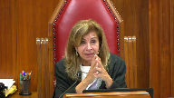
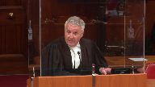

Glen Hansman v. Barry Neufeld
This transcript was made with automated artificial intelligence models and its accuracy has not been verified. Review the original webcast here.
Justice Wagner (00:00:22): Good morning.

Please be seated.
In the case of Glenn Ansman against Barry Neufeld for the appellant Glenn Ansman, Robin Trask and Michael Sopkin, for the respondent Barry Neufeld, Paul E. Jaffe, for the intervener Community and Skipping Stone Scholarship Foundation, Brendan McCarter-Stevens, and Rene Richelt, for the intervener Community-Based Research Center at AL, Dustin Clott, Mr. Tristan Miller, and Grace McDonnell, for the intervener West Coast Legal Education and Action Fund, Adrienne S. Smith, and Kate Feeney, for the intervener BC General Employees Union, Jitesh M. Mistry, and Tom Yachnin, Yachnin, I’m sorry, for intervener E. Egal-Canada, Adam Goldenberg, and Solomon McKenzie, for the intervener Center for Free Expression, Justin Safayeni, and Yadesha Satiswaran, for the intervener Attorney General of British Columbia, Chantelle Rajotte, Emily Lapper, and Stephen Davis, for the intervener Canadian Human Rights Commission, Caroline Carrasco, for the intervener Canadian Civil Liberties Association, Lillian Cadieux-Shaw, and Alexi N. Wood, Robin Trask.
Speaker 1 (00:02:27): Chief Justice and justices, good morning.
I’m going to provide a brief introduction and address our submissions on the weighing exercise under the protection of public participation act.
My colleague Mr. Sobkin will address the defense of fair comment.
We have provided you with our condensed book which I will reference and before I start our introduction I’ll pause here to briefly explain the layout of our condensed book.
If you look at the index of the condensed book, you will see our outline of argument is at tab one.
Tab B is examples of 13 statements by trustee newfelds that are in the record.
And tab C contains the comments by Mr. Hansman and we’ve defined those in our factum as comment one, comment two and so on.
In the record there are nine of the 11 comments in the record.
That’s why at tab C there’s no tab C4 or 11 because those comments are not in the record.
The rest of the condensed book is self-explanatory on the basis of the index.
The case before you involves a school trustee who was criticized for making a variety of statements directed at the LGBTQ community and those who support the use of inclusive resources and policies in schools.
At any point it was open to trustee newfeld to raise any specific concern about a school policy or resource directly with the school board through processes for review of those matters.
Instead trustee newfeld made broad inflammatory statements in public forums on Facebook and at public meetings and events.
When he faced public rebuke and two human rights complaints he continued to make similar statements and filed a defamation action against Mr. Hansman, the then president of the provincial teachers union.
Trustee newfeld seeks a trial on his defamation action but in our submission a proper interpretation and application of the PPPA means his action should be dismissed.
This is because trustee newfeld’s defamation claim is precisely the type of case that the legislature intended to be removed from the litigation stream.
First, Mr. Hansman has a strong fair comment defense.
That defense is designed to ensure that people have broad latitude to express their opinion on matters of public importance without incurring legal liability because their opinion negatively impacts someone’s reputation.
There is a low threshold for finding that a comment is defamatory.
As a result extensive protection for opinions through the defense of fair comment is necessary to protect freedom of expression.
Trustee newfeld has failed to discharge his burden of establishing grounds to believe the defense of fair comment is not valid.
Second, the weighing exercise prescribed by the PPPA favors dismissal of this defamation action.
What is really going on in this case is an attempt by trustee newfeld to silence Mr. Hansman who spoke up in support of a vulnerable group and against what Mr. Hansman viewed as homophobic and transphobic statements.
Justice Côté (00:05:34): On the weighing exercise, does the fact that Mr. Newfield is the one who I would say who started the discussion has an impact?

I mean, the fact that your client was delivering a counter-speech, if I may, does it have any relevance or not?
Speaker 1 (00:05:53): Yes, in our submission you have to look at Mr. Hansman’s comments in context and understand what he was responding to.
And so the fact that trustee Newfeld entered the public realm and made public statements and in fact he anticipated that there would be this type of response, we say that does factor into the weighing exercise.
Justice Rowe (00:06:14): If Mr. Hansman said that Mr. Neufeld was a racist, would that be defamatory?
Speaker 1 (00:06:23): Yes, at the first stage of the our submission is these comments could be could meet the test of defamation with respect to if they’re the test of what they’re about the person and that they tend to lower the reputation of the individual whether or not the comment would amount to fair comment under the fair comment defense or whether it would be or whether it should be protected under section 4 2b would be a factual analysis depending on the specific facts of the case.
Justice Rowe (00:06:56): Is not the controversy here, the public policy issue, one relating to teaching materials concerning gender identity and sexual orientation, and if that is the case, how does that relate to racism?
Speaker 1 (00:07:17): I can skip ahead to our submission on that.

With respect to I think justice row what you are referring to is the comments that Mr. Hansman made about another school trustee, not about trustee Newfeld.
So at the first stage of the defamation test, that would not ‑‑ the comment that’s in the record does not meet the test for being defamatory about trustee Newfeld because the comment was not about trustee Newfeld.
I can take you to evidence in the record that demonstrates that.
Justice Rowe (00:07:51): But is it not the case that Mr. Neufeld says the comment was about him, and where there are disputed facts, is that not why we have trials?
Speaker 1 (00:08:04): I can address that.
In our submission it’s clear on the record and it’s been conceded by trustee Newfell that this comment was not about trustee Newfell.
If you turn to if you have volume one of the appeal record at tab 14 is the application response to the protection to the application that’s before you, the application under the pppa.
This is trustee Newfell’s response to Mr. Hansman’s application.
If you turn to paragraph 15, you will see there trustee Newfell says the defendant’s accusation of hatred and bigotry directed at those he disagrees with are not confined to the plaintiff.
For example, as regards another critic of Soji running for school board he proclaimed and this is the comment that is in comment nine.
It’s extremely problematic to have someone running as a school trustee continue to spread hate about LGBTQ people and also be out there making vile comments about refugees and immigrants as a group.
We say there was no basis for the court of appeal to infer that this comment was about trustee Newfell because it was quite clear from the record that it was not about trustee Newfell and the chamber judge was correct to disregard this as part of the analysis before him.
Justice Côté (00:09:33): So I ask, your client acknowledged, and it is referred to in paragraph 44 of the motion’s judgment, he acknowledged that at least some of the statements that he made are capable of defamatory meaning.

Which were those statements precisely?
So that’s what I’m going to do, I’m going to go ahead and show you what I mean by that.
So I’m going to go ahead and show you what I mean by that, and I’m going to go ahead and show you what I mean by that, and I’m going to go ahead and show you what I mean
Speaker 1 (00:09:55): The trustee alleged a broad variety of statements including the ones specifically about safe and inclusive schools that those were defamatory.
We conceded before the chambers judge that statements such as whether someone was bigoted or transphobic or homophobic or whether someone promoted hatred that we conceded that those could lower the reputation of someone in the public view.
So I’ll continue on.
In undertaking this analysis of the under the weighing exercise we say this court must consider how the ppa is to be applied in relation to a defendant who is being sued for speaking up in defense of a vulnerable group.
And so turning specifically to our submissions on the weighing exercise, the court of appeal overturned the changes, the chamber judge’s decision on the weighing exercise and without conducting the weighing exercise itself reinstated the defamation action.
As a result we submit that this court must either reinstate the chamber judge’s decision or conduct the weighing exercise itself.
And of course the onus is on the plaintiff to satisfy the court that the harm likely to have been suffered by the plaintiff as a result of the defendant’s expression is serious enough that the public interest in continuing the proceeding outweighs the public interest in protecting the defendant’s expression.
The purpose of legislation like the ppa is to screen out proceedings that adversely affect expression made in relation to matters of public interest in order to protect that expression and safeguard the fundamental value that is public participation in democracy.
In points this court looked at the subject matter form, quality and motivation of the defendant’s expression to assess the public interest in protecting it.
All of these criteria are relevant to assessing the public interest in protecting Mr. Hansman’s expression.
So as a preliminary step to undertaking this part of the analysis, it’s helpful to consider what Mr. Hansman was responding to and this goes further to Justice Cote’s question.
We say trustee newfold was not just making statements about a school resource and that this is evident from the record.
Inaudible.
Speaker 1 (00:12:59): That is correct.
And trustee Newfell reports, he repeatedly reports to be speaking only about the curriculum, but when you look at his words, and we say the words matter, that his statements are actually much broader than that and speak directly to those points that he has made, that he has made, that he has made, that he has made, that he has made,
Justice Martin (00:13:13): And then can I go back to that in terms of how we characterize what is the public controversy here?
Because there’s a way in which it could be done very narrowly to say that it’s about a particular school curriculum.
Or it could be done more broadly, which is based on the initial comments that were made that spanned various issues and then we see Mr. Hansman comes back and talks about the obligation on a trustee in terms of safe environment
and it’s a much broader if I put it this way, it’s a much broader statement.
He talks about proactively addressing sexism, misogyny, transphobia, homophobia and racism.
So when we’re picking what the public controversy is here, how much granularity do we use?
How much do we go to what is said as it evolves in being said?
Because it seems that there’s more than just the curriculum at stake in the comments that are being made.
Speaker 1 (00:14:17): Yes, and in some of the case law there is more than one public interest that is identified and which makes sense when you’re dealing with these kinds of issues that can be characterized in more than one way.

We submit that from the outset it was clear and Mr. Hansman was responding to issues that he saw affecting a vulnerable group in society and that he was speaking to the need for safe and inclusive schools.
And so we say that that is the public interest at issue here and that that is an important sort of contextual piece when you start off on the weighing analysis is to have identified what the public interest is.
I’m going to take you very briefly to our condensed book further on this point about looking at trustee Newfeld’s statements and what Mr. Hansman was responding to.
So tab B is examples of 13 statements by trustee Newfeld that are in the record.
And tab B1 is the October 23rd
Facebook post.
And I’m not going to read this to you.
This is reproduced in full.
The wording is reproduced in full in our factum.
But I just want to point out that this is here in the record reproduced in its entirety.
And when you look at what Mr. Hansman was responding to, there’s the wording of the Facebook post and there’s also a meme and there’s a variety of comments.
And the wording of the Facebook post itself covers a broad array of topics and certainly not just a school resource.
The following tabs beyond tab 1 contain 13 other examples from the record.
And it’s already noted that these are the
Justice Jamal (00:16:10): Can I ask you, these photos that appear in the Facebook post, are those also posted by Mr. Neufeld, or are those posted by a commentator?
Speaker 1 (00:16:18): Yes, that first photo that’s at the top is part of the post by Trustee Neufeld.
Overlapping speakers (00:16:23): And then the second one, the 2017, is also part of the post.
Speaker 1 (00:16:26): Yes, that’s a mean comparing 1997 to 2017.

And as we’ve noted these types of statements act to dehumanize transgender people and I’m going to take you to a quote from the BC Human Rights decision on this point in the decision of OJ and Wacot which is at tab F4 of our condensed book.
This is near the end of the condensed book at page 145.
And I’ll be looking at paragraphs 156 and 157.
And the OJ and Wacot case was a decision where the BC human rights tribunal considered a complaint by Ms. OJ under section 7 of the human rights code and it was with regard to a flyer that was created by Mr. Wacot.
The flyer was aimed at Ms. OJ and described being transgender as an impossibility at which exposed people to harm.
And so the tribunal is explaining the significance of these types of statements here.
At paragraph 156 the tribunal says as Ms. OJ points out for many social groups public statements that they are not real and that members of the group lie about who they are may not expose them to hatred.
Most protected groups do not have a social context or history of being told they do not exist and that people who claim to be a part of the group are lying or mentally ill.
And continuing on at paragraph 157 this is perhaps the most pernicious stereotype about transgender people and is one of the most as one found at the root of most discrimination against them.
And the tribunal then quotes a report by Dr. Betcher as the explanation for how the deceiver pretender construct is harnessed to justify the marginalization of and violence against trans people on the basis that their very existence is at best an act of misguided make believe or at worst a deliberate and malevolent deception.
The effect of this stereotype is to dehumanize transgender people.
And we say this is the very stereotype that trustee new fold employed in reference to transgender people throughout his statements.
Trustee new fold also made an array of statements denouncing gay marriage and same sex parenting and some of these are also included in the excerpts that are before you.
We say the motivation and subject matter of Mr. Hansman’s expression is clear from his affidavit evidence and the face of Mr. Hansman’s comments.
The court of appeals seemed to imply that the quality of Mr. Hansman’s speech was diminished because he used strong terms such as bigoted and transphobic.
We submit that this is appropriate language to respond to trustee new fold’s public statements.
Mr. Hansman’s comments were critical of trustee new fold’s statements but we say they were also proportional in the circumstances.
Mr. Hansman did not employ deliberate falses or vitriol.
And we say the value of Mr. Hansman’s expressive activity is not diminished by the fact that he opined that trustee new fold tiptoed quite far into hate speech.
Justice Côté (00:19:38): But in our decision in point protection met, we said that in that weighing exercise and when a judge has to look at what has to be protected, we said that not just any matter of public interest will be relevant.

Instead, the quality of the expression and the motivation behind it are relevant here.
So are you of the view that the chamber’s judge ask himself if there is a public interest in protecting the expression at issue?
Because what you want, the protection you are asking presently is the protection about the attack comments.
Speaker 1 (00:20:18): Yes, we we believe that the chambers judge did properly apply the criteria with respect to the weighing and looking at that there was a strong public interest in protecting Mr. Hansman’s.
Justice Côté (00:20:29): Let’s say, let’s take an example where somebody used disrespectful words.
Let’s say that somebody is a plaintiff in defamation and you are of the view that it justifies the person who wants to respond to use disrespectful words too.
Speaker 1 (00:20:49): Well, when you enter the public realm and make a variety of statements, I mean, everything will be fact specific.

So it will depend on what the specific scenario is that’s before the court.
But if someone enters the public realm and makes a variety of disrespectful comments and our submission is that the legislature was intending to stream these cases out of the litigation stream so you can’t sue someone when they respond in kind with similar types of comments.
This is an arena of public debate and that this protection for free expression is a goal of the legislation.
Justice Côté (00:21:35): So, for instance, if somebody says, this is not our case, but let’s say if somebody says about another person, that person is a criminal, so the person who is qualified as a criminal is allowed, according to you, to respond in saying, I’m not a criminal and you are a criminal.

Is it your position?
Speaker 1 (00:21:56): It may be what the legislature was intending to screen out.
I mean, that’s not the facts of our case.
But it may be that the legislature was intending to screen out these types of debates between two sides of where there’s similar types of accusations going back and forth.
So we say the value of Mr. Hansman’s expressive activity is not diminished by the fact that he opined that trustee Newfeld tiptoed quite far into hate speech.
Mr. Hansman believes this.
The Chilliwack teachers association and bctf have brought a human rights complaint alleging a violation of the human rights code provisions that prohibit discrimination that prohibit publications that discriminate or likely dispose a person or group to hatred.
There’s a public interest in knowing this and Mr. Hansman’s comments were made in that context.
And if you very briefly look at the comments, Mr. Hansman’s comments that are at c5, 6 and 7, these are the three comments that are in the record that relate to the human rights complaint and where Mr. Hansman made comments along the lines that trustee Newfeld had tiptoed quite far into hate speech.
And in each one of these tabs 5, 6 and 7, you will see that the headline very clearly sets out that these are articles about the human rights complaint.
The articles review the human rights complaint.
They quote from the complaint and they include quotes from Mr. Hansman and from trustee Newfeld.
So I’ll make three points about the value of these comments.
First we say all of Mr. Hansman’s comments including the three comments that include the reference to the human rights complaint were all comments to the media on an issue of public importance.
Although Mr. Hansman did not control what parts of the interviews were used in the articles, the comments all reflect Mr. Hansman’s objective of speaking against discrimination and in support of safe and inclusive schools.
Reporting by the press on matters of public importance is a central component of our democracy as the media plays a vital role in the functioning of a democratic society.
As we’ve already noted, second, we say that in written context and in response to trustee Newfeld’s statements, we submit Mr. Hansman’s comments are a proportional response.
And we also note finally that as mentioned, these particular articles were with respect to the human rights code.
And as we all know, discrimination under the code relates to the discriminatory effect of actions or statements on a person or group.
Intention is irrelevant.
So the idea that by addressing concerns about discrimination under the code, Mr. Hansman was saying trustee Newfeld hates transgender people, this is the point of the protection of discrimination laws.
I’ve already mentioned, I’ve already taken you to the record with respect to the comments about refugees and immigrants.
And we say there’s no basis for the court of appeal indicating that there were grounds to believe that Newfeld could have established that comment was about him.
Justice Rowe (00:25:33): in
Overlapping speakers (00:25:33): But it’s-
Justice Rowe (00:25:34): But I take it from what you’ve said, and I’m putting forward a hypothetical because you’re saying that is not the case here, that if a charge of racism had been made, it would be a separate issue from gender identity and sexual orientation.

Overlapping speakers (00:25:52): Yes.
Justice Rowe (00:25:52): OK.
Speaker 1 (00:25:58): In conclusion on this point, we say there can be no doubt that Mr. Handsman’s expression is at the high end of the protection deserving spectrum.

His expression in support of safe and inclusive schools in defense of a marginalized and vulnerable group and against intolerance and discrimination is close to the charter’s core values.
The fact that Mr. Handsman forcefully denounced trustee new fell’s statements does not detract from the importance of Mr. Handsman’s comments and we say there’s a strong public interest in protecting this type of expression.
I’m going to turn now to the other side of the weighing exercise and the assessment of the harm to the plaintiff.
In assessing this, the magnitude of the harm is relevant because the chamber’s judge must determine whether the harm allegedly suffered by the plaintiff is sufficiently serious that the public interest in permitting the proceeding to continue outweighs the public interest in protecting the expression.
The court of appeal held that the chamber’s judge erred by failing to give full effect to the presumption of damages in defamation.
We disagree.
In bent, this court stated that general damages in the nominal sense will ordinarily not be sufficient for this purpose.
We say that is the case here.
Although general damages are presumed in defamation cases, the presumption of damages in defamation on its own cannot be enough to outweigh the public interest in protecting Mr. Handsman’s expression.
We must keep in mind that the court only gets to the weighing exercise if there are grounds to believe that the defamation suit has substantial merit.
If the presumption of damages in defamation is enough to outweigh the public interest in protecting expression like Mr. Handsman that is made in defense of a vulnerable group, the purpose of the pppa would be undercut and the weighing exercise would rarely apply in the context of a defamation suit.
As the chamber’s judge noted, there is precious little evidence from the plaintiff in the record that he can rely on to meet his burden at this stage.
There’s also an issue of causation here where like mentioned in points, there may be sources other than the defendant’s expression that may have caused the plaintiff harm.
In the records, there are examples that demonstrate trustee Newfeld himself recognized his own statements were a source of harm to him.
For example, we saw in his Facebook his first October 23rd
Facebook post that trustee Newfeld says at the risk of being labeled a bigoted homophobe.
In other words, he recognized other members of society would hold the opinion that these statements were bigoted and homophobic.
Justice Côté (00:28:27): Miss, what about the accusation of hate speech?
Is it not common sense that an accusation of hate speech will cause damage?
Speaker 1 (00:28:39): Yes, in terms of that it would lower the reputation of an individual that meets the test for defamation and in that sense that it would, you know, there would also be the general presumption of damages and defamation.
Justice Côté (00:28:57): And there were such statements here about the fact that Mr. Neufeld promoted hatred?
Overlapping speakers (00:29:03): Yes.
Justice Côté (00:29:03): Yes.
Justice Jamal (00:29:05): Mr. Rasky, as I understand it, you don’t take issue with the presumption of harm, you’re really taking issue with the, it can’t render the statute a dead letter, we’re talking about quantification.
Overlapping speakers (00:29:15): Yes.
Justice Jamal (00:29:15): And the presumption of harm doesn’t undercut the need to actually have some basis of quantification.
Overlapping speakers (00:29:22): Yeah.
Justice Jamal (00:29:22): particular case
and here you say there aren’t any indicia or any evidence of actual harm and in fact he got re-elected so that’s your position as I understand it.
Speaker 1 (00:29:32): Yes, that’s correct.
There’s also I’ll take you to back to one of the comments in the condensed book at c5 which has another example.
There’s a quote by trustee newfald here when he’s speaking to a reporter that shows some acknowledgment by him that his statements have caused harm.
So on the second page, this is one of the April 2018 articles that is about the human rights complaint.
There’s a quote by Mr. Hansman and then on the second page on the third line down trustee newfald says he’s agreed not to go into any schools until the human rights complaints are resolved and one principal said that the trans there’s a quote from trustee newfald.
One principal said that the transgender kids felt threatened by me simply because I have stated that I think that kids should not be rushing into bracing their gender identity, newfald said.
And so in this analysis under the pppa we submit that the plaintiff’s own statements were a source of harm to his reputation and that he has acknowledged this and this must have some impact on how much harm can be attributed to the defendant.
As part of the public interest in continuing the proceeding, the court of appeal identified a novel consideration in the weighing exercise, the potential chilling effect on others with contentious opinions.
As detailed in our factum, in our submission this new element is not consistent with the wording of section 4 of the pppa, the legislative history or this court’s decision in points where this court explained that harm is relevant in this analysis only to the extent that it relates to harm suffered by the plaintiff, not harm in general.
In addition, we contest the premise relied on by the court of appeal that in these circumstances the inability to sue in defamation would negatively affect free expression.
The court of appeal identified this chilling effect on others with contentious opinions but then did not conduct the weighing exercise using this analysis.
The court of appeal simply said that trustee new fell deserves a trial on the merits and the matter should not have been summarily screened out.
If this court determines that the chilling effect on others with contentious opinions is part of the section 4 2b test, we make three submissions on this point.
First, those who may participate in public debate but would make less inflammatory statements would not be deterred from participating because trustee new fell’s defamation action is not proceeding.
This is because those individuals would understand that trustee new fell’s inability to sue was not because he holds contentious opinions but because Mr. Hansman’s expression was a proportional response to trustee new fell’s statements and there’s a public interest in protecting Mr. Hansman’s expression.
This leads to our second point which is if weighing the court of appeals chilling effect on others, the starting point for this analysis must be the effect on others who would make statements similar to trustee new fell.
Trustee new fell says that he never expressed hatred towards LGBTQ individuals.
That question is before the human rights tribunal.
In any event and by any standard his statements were offensive and inflammatory.
A review of the record shows that trustee new fell made a broad array of public statements about the LGBTQ community including statements about transgender identity, gay marriage and same-sex parenting.
Trustee’s new fell statements are in the record before you and they speak for themselves.
I’m going to take you to one last statement by trustee new fell that’s in the record and it’s at tab b13.
The type is very small but it’s a succinct statement and I’m not going to read it out.
I’ll just let you read it for yourself.
If there was any chilling effect on others who make statements similar to trustee new fell because they cannot sue, this should not outweigh the public interest in protecting Mr. Hansman’s expression.
And finally in any event there’s no basis in the record to support the conclusion that trustee new fell or anyone witnessing this public discourse would have been deterred from speaking out on matters of public interest because trustee new fell’s defamation claim was dismissed.
On the contrary trustee new fell continued to voice his opinions even after many individuals spoke out in opposition to his statements and even after his defamation action was dismissed which is addressed in our fresh evidence motion that’s before you.
Subject to any questions I will turn it over to my colleague Mr. Sobkin.
Speaker 2 (00:34:47): Thank you very much.
Speaker 3 (00:35:11): Chief Justice, justices, in my submission this morning, I will first address the Court of Appeals finding that the chamber’s judge erred by not considering the constituent elements of the fair comment defence in relation to each of the 11 publications about which trustee Neufeld complains.
I will then address the Court of Appeals conclusion that there are grounds to believe that the fair comment defence will not succeed for some of Mr. Hansman’s comments.
Before turning to those issues, I wish to make a few brief comments about the defence of fair comment.
These are set out in our outline of oral argument starting at paragraph 7.
It’s that fair comment plays a vital role in protecting freedom of expression and debate which this court has described in wick radio as the very lifeblood of our freedom and free institutions.
This is because as justice Bini recognized in wick radio at paragraph 15, a successful defamation action or even the threat of one can have a chilling effect on the willingness of individuals to speak out on matters of public interest.
And in the decision which is at tab F3 of our condensed book, justice Dixon noted that the defence plays a crucial role, that’s his word, in protecting freedom of expression because of the low threshold for finding that a person has been defamed by another person’s statements.
The second general comment I wanted to make is that the term fair comment is a bit of a misnomer in that it wrongly implies that a defendant’s statements must meet a fairness standard.
And at paragraph 9 of our outline of argument, we have a quote from justice Bini in wick radio that I think is important because it exposes this.
And I’ll just read from that.
He says trenching criticism which otherwise meets the honest belief criterion ought not to be actionable because in the opinion of a court it crosses some ill-defined line of fair-mindedness.
The trier fact is not required to assess whether the comment is a reasonable and proportional response to the stated or understood facts.
Now, we submit that Mr. Hanson’s comments were a reasonable and proportional response as my colleague developed earlier.
But as wick radio makes clear they don’t have to be for the defence to apply.
And we also say that fair comment is particularly important whereas here the conduct under examination is that of an elected official.
And justice Dixon in the decision said that citizens have long had a right to make public their thoughts on the conduct of public officials in terms usually critical and often caustic is what he said.
Now, I turn to the first point for the court of appeal which was that the chamber’s judge erred by not considering the constituent elements of the fair comment defence in relation to each of the 11 comments.
We disagree with that.
We say that the law does not provide only one route for resolving claims of fair comment.
Parties have leeway to argue the case in the manner they see fit.
And wick radio exemplifies this flexibility as the parties focused on one innuendo of many and the court applied the defence to that innuendo.
And that was that the plaintiff would condone violence towards gay people.
Justice Côté (00:38:56): Mr. Arasovkin, you refer to weak radio a lot.
I understand for principles, but also we have to be careful because weak radio was after a 15-day trial.
Overlapping speakers (00:39:06): Yes.
Justice Côté (00:39:07): So, it was easier for a judge to assess the proportionality of what was said.
Here, what Mr. Neufeld is asking is to have his day in court, essentially.
Speaker 3 (00:39:21): That’s true, but, but the, the, there is an obligation, there’s a burden under the PPPA on Trustee Neufeld to establish that the defense of fair comment is invalid.
And the chamber’s judge has to apply the leading authority from this court on, on those elements.
And we, we submit that he did properly and I’ll, I will come to that because that’s the second error that the court of appeal had found.
But just in terms of the obligation to consider the 11 statements individually, we say that that’s, that’s problematic and the court shouldn’t endorse that for every case.
Because the parties may or may not want to argue the case that, that way and, and, and I’m going to take you to the reasons to show you how this case was argued.
They may prefer to deal with just a few statements that summarize the, the, the core allegations of defamation.
And so we, and, and what I was going to say about Wick Radio is that there was, in paragraph 9, the court lists all of the innuendos, the, the references, the comparisons to Hitler, the promotion of hate speech, the condoning of violence, but the parties just focused on the condoning of, of, of violence.
So I say that that’s an example of just letting the parties argue the case in the way they, they see fit.
And if you look at what happened in this case, if you have the reasons of the chambers judge and I, if I could ask you to turn to paragraph 24.
And Justice Cote, you’d asked earlier about the particular defamatory statements considered and, and here he lists them and as he points out, these are the ones that the plaintiff relied on in, in oral argument.
If you turn over the, the, to the next paragraph, paragraph 25, you’ll see that the chambers judge acknowledges that there were other statements.
He hasn’t missed that.
That as he points out, that the, the core of the plaintiff’s defamation allegations are the ones that he did deal with.
Now these allegations in paragraph 24 are similar to all of the 11 statements with the exception of two.
One was the allegation about a candidate making comments about immigrants and refugees and in our submission, that’s just not an issue.
The court of appeal plainly erred in saying that there’d be grounds for finding that that comment related to trustee Neufeld.
The second one was the, the statement by Mr. Hansman that trustee Neufeld had made a misogynist statement.
We deal with this in our factum, factum at paragraphs 104 and 105 and my friend does not argue against that conclusion that the fair common defence would apply to that, to that statement in his factum.
So the ones that the chambers judge dealt with in 24 are all captured, capture the, the ones that were not mentioned in, in paragraph 24.
So we say to, to sum up on this point that the party should have the flexibility to argue this case in, in the way they, they see fit.
Then when, when it came to deciding the case, then if I could ask you to turn over the paragraph 131, because this is again an indication, this is how the parties argued the case.
So the chambers judge has gone through the, the elements and now he’s dealing with the party’s submissions and he says in paragraph 131, in answer to this application and reliance on which the decision of the Ontario Court of Appeal, the plaintiff argues what a reasonable truer fact could find and note it’s the impugn statements, it’s plural, like they’re being dealt with all as, as, as one.
I turn now to my, the second basis that the Court of Appeal intervened and this was on the application of the elements of the defense.
I noted the outset that there’s two elements of the defense that the comment must be on a matter of public interest and must satisfy an objective test of whether any person could honestly express that opinion on the proof facts are not challenged here.
So there’s three elements that are.
And in our submission, neither the Court of Appeal nor the respondent has pointed to any reviewable error by the chambers judge in his conclusions on the, the other three elements.
That is the chambers judge concluded there was a factual foundation for the comments.
They were comments and not imputations of fact and there was no evidence of malice.
And we say all of these conclusions are amply supported by the record.
Now the based on fact requirement, we, we say that the articles show the factual foundation upon which the opinions are based.
And if I could just take you ‑‑ before going back there, Mr. Subtena.
Justice Côté (00:44:57): about that, you say that all the appellant’s imping statements fit within the broad definition of comment.

But is it your position that, for instance, the comment that Mr. Neufeld violated his obligations as a school board trustee, is it not it can be more properly characterized as an imputation of facts than the comment?
And if it can be more, if it can be properly characterized as an imputation of facts, can you say that the fair defense comment?
Speaker 3 (00:45:34): I think it depends on the context in which the comments were being made.

This can only be an opinion.
That’s how it would be accepted by a member of the public because Mr. Hansen is not a tribunal deciding that question so he cannot be stating a fact.
He can only be stating an opinion.
Justice Binney said in wick radio that the notion of comment is generously interpreted and is not a difficult hurdle to overcome.
The chamber’s judge is obligated to consider this under the PPPA and that was his conclusion.
In our submission there’s no revealable error.
My friend says, and I’ll deal with the imputation of fact issue, paragraph 70 of the respondent’s factum, he says many of his statements could be understood as statements of fact but that’s not the test on an appeal.
It’s whether there was revealable error.
We submit that there was no basis to overturn the conclusion of the chamber’s judge whose responsibilities decide in the context of this case whether there’s a reasonable prospect of the defense not succeeding and he concluded that that threshold wasn’t met.
For the other statements such as homophobic, transphobic and anti-LGBTQ, the Volpe decision which a number of interveners relies on concludes that those are looks at the case law and concludes that those are comments.
That’s a paragraph 232 to 237 of the Volpe decision but the main point here again to repeat is that in our submission there’s no basis to overturn the chamber’s judge on the mere assertion of a contrary way of looking at it by the trustee Neufeld.
Justice Karakatsanis (00:47:36): Can I ask you this?

If over here, yes, if we’ve got 11 statements and the motion judge is satisfied that there is no valid, sorry, there is a valid defense for fair comment for all but one, that one of the comments could be taken as a statement of fact, what does the motion judge do?
Dismiss all of it but one? Well
he may
Speaker 3 (00:48:08): Yes, I thought about that and we don’t have that here.
It’s an interesting proposition
Overlapping speakers (00:48:13): I mean, I think.
Speaker 3 (00:48:14): that practically a case like that would most likely depend on the facts but would most likely end up being dismissed at the weighing stage.

But here I would say that it is points did make the point that it’s a basis in the record.
So it can be one finding.
So that would probably allow the action to continue.
So I’ve addressed the recognizable as comment.
And I was dealing with the based on fact which is the other element challenged.
And if you I actually won’t take you to the document again because my colleague did it’s comment c5.
I think we should look at it because this is an important question about the factual foundation.
So it’s c5.
And it’s page 65.
At the top is the actual comment from Mr. Hansman.
And he says this isn’t just a simple matter of new felt philosophically disagreeing with the concept of transgender or supporting students who are transgender.
He’s creating a school environment for both our members and a student that is discriminatory and hateful he said.
And underneath that are the comments of trustee new fell.
That’s the factual foundation.
So justice said in wick radio the idea of the factual foundation is that you’ve got to give the reader enough so that they can make up their minds on the opinion.
So they can read the comments and then see the opinion and decide whether they think that that opinion has any validity.
And the other thing to keep in mind is that there’s also when something is in the public realm is a well-known controversy, then wick radio makes the point that you can consider that as part of the factual foundation.
And we’d let you know that in the appellant’s record volumes three and four consists of the Dettman affidavit which is close to 500 pages of newspaper articles spanning the period on this issue and it’s just a selection.
So it was in the public realm.
So because we say the factual foundation is met in all of the articles, it’s not necessary to consider what would be a vexing question which is how responsible can Mr. Hansman be for the factual foundation contained in a newspaper article when he’s interviewed.
The media have sought him out for comment on a controversy.
They’ve asked for his comment.
The media is responsible for providing the factual foundation for that controversy.
Of course they’ve got to get it right
and if they don’t they could be sued but trustee Neufeld has not sued any of the publications.
He’s only sued Mr. Hansman.
Speaker 3 (00:51:45): The final issue I’ll address is the question of malice and the Court of Appeal we would say nitpicked with the reasons of the judge on this.
I mean they said well he never said that he had an honest belief in his affidavit but when you the point is when you read the affidavit as a whole you see that he had an honest belief and he was entitled to reach that conclusion.
The Court of Appeal said well the chambers judge said the only way I could there would be a finding of malice is if he admitted under cross-examination and we say that that what he was stressing there because he mentioned it a number of times is that trustee Neufeld had the right to cross-examine Mr. Hansman and he never availed himself of it so he makes bold statements about the potential for malice and then never uses the source which is Mr. Hansman to test that.
So that was a relevant factor and informed his comment about that this was the only way to establish malice.
I mean he knew that there was other ways.
He gulched in his reasons that there could be malice from the words used themselves.
So he understood that but his main point was that there was no evidence of malice.
So to sum up on that point we say that the Court of Appeal did not have a basis to intervene on the three elements of the offense and that the chambers judge was correct in his ruling on the elements.
Now in conclusion I just want to refer to one other part of the Court of Appeal’s reasons because the Court of Appeal was quite critical of the chambers judge for relying on WIC radio to the extent that he did even though it’s the leading authority in this case and in this country and they listed five reasons why you could distinguish WIC radio and we say none of them have any validity.
For example, the Court of Appeal considered the first point of distinction to be the identity of the defendant.
In WIC radio a shock jock commentator in this case the president of a professional union and we submit with respect this is entirely irrelevant to the analysis.
A person known to voice extravagant opinions is not entitled to greater protection of his expressive rights.
That can’t be the law.
But the point I want to focus on most is the point that there was that WIC radio was decided after the trial which is a point Justice Cote made and what we’d say is that’s true but it can’t be a basis and it is listed as one of the reasons to distinguish WIC radio but it can’t be a basis to not apply the test set out in WIC radio.
And in points the court talks about the judge on these motions asking themselves what’s really going on in this case.
And we submit although the chamber’s judge didn’t have the benefit of this court’s decision, the Court of Appeal did, the chamber’s judge didn’t, that’s what he did.
And he could see the obvious parallels between the two cases.
In WIC radio at paragraph three Justice Binney said this, quote, the context with public debate over the introduction of materials dealing with homosexuality into public schools.
In the case of Barr the judge says, paragraph seven, the background in this action lies within a philosophical dispute over the British Columbia Ministry of Education’s publication of tools and resources relating to sexual orientation and gender identity.
Similar statements.
Even some of the players are the same.
The plaintiff in WIC radio was Kari Simpson.
It is her organization culture guard where trustee Neufeld delivered a speech on these issues and the text of that speech is in our condensed book at tab B3.
In WIC radio as noted the defendant had indicated that Kari Simpson was hostile towards gay people to the point where she would condone violence towards them, despised historical figures like Adolf Hitler were invoked.
Despite the harshness of those comments this court upheld Rafe Mayer’s fair comment defense.
Now 11 years later the same kind of issue arises.
There are echoes of the old debates, criticism of gay marriage and same sex parenting and new strands, namely gender identity.
But now the case for Mr. Hanson’s speech, free speech is even stronger for the legislature has enacted the PPPA designed to protect it in addition to the protections afforded by the fair comment defense.
In our submission we say the judge was right to see the parallels between this case and WIC radio and to conclude after applying the PPPA the trustee’s Neufeld’s auction should be dismissed and we respectfully ask the court to reinstate the chamber’s judge’s decision.
Justice Karakatsanis (00:57:01): Mr. Sopkin, when I read the Court of Appeal’s decision, it seems to suggest that radio is not relevant apart from the issue of it being after a full trial because the comments wouldn’t be readily recognized, the statements wouldn’t be readily recognizable as comments given the context or that the statements wouldn’t be read, it wouldn’t be clearly based on fact.
And so it seemed to me to be somewhat circular in the reasoning having decided that there’s no, you know, the fair comment defense is not available and that becomes the basis on which radio is not applicable.
I don’t know, is that a fair reading or is there something else going on?
Speaker 3 (00:57:50): Because it does, earlier on in its reasons, it pointed out that in its view, there was a basis in the record to conclude that Mr. Hansman might not be able to establish certain of the elements.

But they never point to particular comments.
They don’t say, well, which words he used might be considered this.
They didn’t point to particular statements, even though they pointed out that it’s important to look at all the statements.
And then they bring those back into play in distinguishing wick radio.
It’s true.
That’s how they do it.
But we say if you go through those reasons, they’re not valid.
So if you conclude that the chamber’s judge, it was within his discretion to decide how the PPA should work, you can’t then ignore that and just say, well, that’s a reason to distinguish wick radio.
Justice Wagner (00:58:53): We’ll take its morning break, 15 minutes.

Court is adjourned.
Speaker 2 (00:59:53): Justice and Justices, I want to quickly respond to a few of the comments of my friend before I address the points that I’ve covered in my condensed book.

In my submission, the only freedom of Mr. Hansman that’s being challenged at all in this litigation is his freedom to libel critics and to use libel as a way to shut down debate on important matters of public interest.
That’s what’s being threatened is his ability to use his power as the president of a massive public sector union to use libel to silence people like Mr. Neufeld and then if people are brave enough like Mr. Neufeld to speak out to punish him and make him pay for having dared express opinions which are contrary to an ideology which Mr. Hansman and the other public sector unions and the government of British Columbia and a whole slew of public interest groups seek to advance.
There’s a reason why Mr. Neufeld’s very first public comment about SOGI starts with I can no longer sit on my hands.
He was the first one despite the implementation of this program throughout the schools in British Columbia, he was the first school board trustee to say something.
Now, of course, we can look at his comments and say they were somewhat inflammatory, indelicate, perhaps hurtful to people, but he’s a retired probation officer who’s elected by the parents of Chilliwack to represent their interests on the school board and as best he can, he’s raising an issue which he said he could no longer stay quiet about.
And why is it?
Why is it that a trustee would be compelled to stay quiet about something?
Well, the answer is when he does speak out, this is what happens to him.
He gets vilified.
He predicted it.
He said at the risk of being labelled a bigoted hopeful and that’s exactly what happened.
It happened in one day.
Justice O’Bonsawin (01:02:20): But isn’t the issue the fact of what he said, I’m sure you’re right, isn’t the, it’s what the words he used, it’s not just the fact that he said something to speak out, it’s what he said, what led to a response by Hansman and I think that has to be recognized.

Speaker 2 (01:02:42): And what he said is in black and white and you can read that and presumably have, he is attacking a program which he feels to be harmful to children.

That is what he is attacking.
He is also attacking to some degree if you want to put it that way the proponents of this program who are at the great risk to the health and well-being of the children in the schools imposing this ideology without any debate on any school board anywhere and he accurately predicted that if he raises any questions about this, he is going to get nailed and that is what happened.
And that is why if we are looking for evidence of a chilling effect, ask yourself why was it?
How could it be that a program like this got implemented across the province in every school without any school board trustee speaking out about it?
It was Newfeld who spoke out and of course we have seen what happens and unless a guy like Newfeld gets a day in court.
Justice O’Bonsawin (01:03:44): chilling effect
and he after this goes on he continues afterwards how does the chillin effect have an impact if he keeps doing it
Speaker 2 (01:03:54): There’s never been any suggestion that Neufeld was chilled by Hansman’s misconduct.
In fact, for Neufeld, this is a hill to die on.
And the pleading set it out.
After the smear campaign started, Neufeld did not back down.
He did not stay silent.
He kept expressing public criticism of a program which he feels is harmful to kids.
Whether he’s right or wrong, whether he didn’t express himself very well, whether the words he used might have upset the feelings of some people.
Justice Côté (01:04:31): You’re not arguing chilling effect on Mr. Neufeld, but you say that there was chilling effect on other people.
Speaker 2 (01:04:40): Well, no, what I’m saying is this, the amongst the factors that we use to determine public interest in the wing exercise, this court was clear in points protection that it’s not just the inclination of the defendant who may want to speak on something of public importance, it’s others, too, and really the focus as I see this court was protecting the public arena, in other words, an ability for the public to participate on controversial matters of public interest.

That’s the focus of the act is to protect that so that people can participate on these issues of controversy.
So it goes beyond just the interest of a defendant.
It obviously includes others, which would clearly include people like Neufeld who are speaking against a particular narrative, and it would include other school board trustees and parents and any other people that want to participate.
They have to know that if people cross the line and target them with this kind of egregious libel that they have some legal recourse.
It’s just one more factor which might make a difference to some people who are on the sidelines, but if they learn, in my view, if they learn that you have no recourse and it’s effectively open season against you by people like Mr. Hansman, these powerful public sector unions and government officials and activists, if they’re told that they can libel people without any legal consequence, that’s just a dinner bell for these folks to shut down public debate and to drive people like Neufeld and any other critics on these matters into a foxhole where they wouldn’t be able to participate in these debates.
Justice Côté (01:06:34): And does it make a difference?
I’m just interested in your views on that.
Who started the conversation?
Speaker 2 (01:06:43): While the conversation, I mean, the initial flurry of publication started the day after Neufeld opened up with his criticism of Soji.
Justice Côté (01:06:56): is mr neufeld who uh went uh went out first let’s see to comment that program does it make a difference
Speaker 2 (01:07:05): No, I don’t think so.
I think when you’re dealing with a libel claim, you look at the publications at issue and determine whether or not in this case whether or not Mr. Hansman has any reasonable prospect of establishing the requisite elements of the fair comment defense and you have to look at each of the publications and go through what this court said in WIC radio are the essential requisites of that defense.
The history as to who opened up on the debate to me is immaterial.
Overlapping speakers (01:07:39): Don’t you think that’s part of the context?
Speaker 2 (01:07:41): Oh, absolutely.

Absolutely.
And so part of the context would be if you can predate Neufeld’s initial comments, you can look at the implementation of a program which Mr. Neufeld and others felt was harmful to the children and he eventually could not stay quiet any longer and he spoke out.
Justice Karakatsanis (01:08:04): But can I just bring you back, Mr. Jaffe, because the whole legislation, the whole purpose, the whole issue we’re here is to talk about the public interest in allowing free debate on.
Justice Karakatsanis (01:08:16): of public interest.
That’s a given.
And Mr. Newfield had the right to say anything he wanted.
Overlapping speakers (01:08:24): Mm-hmm.
Justice Karakatsanis (01:08:24): about the nature of the program.

Isn’t the reason we’re here is about how he expressed his opposition, what he said specifically, what was said in response.
I think high-level discussion about smear campaigns, about the right to speak out, about courage to speak out, is not helpful.
We need to look at the test in this case, what the words were, what the words were.
Overlapping speakers (01:08:49): in response.
Justice Karakatsanis (01:08:50): to determine whether this statutory standard applies.
Nobody is suggesting he didn’t have the right to speak out about it.
Overlapping speakers (01:08:58): Right.
Justice Karakatsanis (01:08:58): he disapproved of so I’m not finding this particularly helpful.
Thank you for that focus on.
Thank you for that issue in this case.
Speaker 2 (01:09:07): Um, to address that, we have to look at what Neufeld actually said and whether it has now become the case in the law of defamation that libeling people is authorized based on what someone else said.
This would be a new development.
The fair comment offence, of course, is contextual and needs to have reference to all of the facts which would include what Neufeld said.
But if I can perhaps, um, well, and actually just before I take you to the actual statements, let me address that point just a bit more.
The point you raise is really more appropriate to a trial where the cut and thrust can be based on a factual foundation, who said what to whom and when, and allow for the evidence to be challenged.
You can’t use what’s supposed to be a screening device to weed out abusive claims, especially, especially.
Justice Karakatsanis (01:10:24): You have to apply the test, but it’s in the screening.
I mean, the whole point of this was to have an opportunity to screen out.
So you have to apply it.
Speaker 2 (01:10:35): Right.
And we screen him in the context of what the purposes are of the ppa.
It is not to conduct a summary trial.
It is not to make findings that for instance a decision in wick radio will determine an outcome.
That’s a summary trial approach to what’s supposed to be a screening process designed to weed out litigation which compromises one’s freedom of expression.
And so just I’m going to take you to the statements.
I do want to do that.
But I want to I want to refer to what the intention was of this ppa.
We’ll call it a slap act.
What is being asked of you is way beyond what the intentions are of this legislation which is essentially to spare people the ordeal of being dragged into court when they speak out on something of public interest.
And as the attorney general in bc said when the act was being passed, it’s to address a mischief which has arisen when people who are powerful and wealthy and able to afford lawyers initiating lawsuits or threatening lawsuits against individuals who are critical of them in order to stop them from participating in that debate.
Now we know, we know where so I know that’s just the mischief that’s designed to be addressed by this legislation.
We know that the power imbalance overwhelmingly favours handsmen here.
We also know that nobody could possibly think that a defamation claim against handsmen is going to slow down in any way, shape or form the agenda being advanced by the public sector unions and by the governments and by the public, by the private interest groups.
This case is a real dispute.
It is not a case being brought to silence Mr. Handsman because nobody could possibly believe it could have that effect.
And of course Mr. Handsman’s own conduct after the litigation started shows us that because he kept libeling new felt.
He wasn’t deterred at all by the commencement of this action.
He kept libeling new felt.
So when we’re addressing this public interest factor about the chilling effect, that’s an interesting principle and it has to be considered obviously in many slap cases but on the immediate facts here, new felt wasn’t chilled by the libels and handsmen wasn’t chilled by the litigation.
Handsmen kept libeling new felt after the litigation and new felt kept criticizing soji after the litigation.
Inaudible.
Speaker 2 (01:15:19): So my first response to those areas is that this would be for a trial to address once we have an adequate factual foundation.

You know, you get into subjects such as vulnerability and these kinds of things can be quite complex.
And you can’t ‑‑ you need to do a bit of a deep dive into the evidence on some of these areas.
And that can only be possible.
Justice Jamal (01:15:42): Would you say you needed a trial if somebody made what was perceived as racist comments against black people or indigenous people?

Would you say you need a trial to evaluate whether that is racist?
And it seems to me that comes back to the question about whether this group is, you know, in the centre of public consciousness or not, and it’s a public understanding being enhanced in terms of the reality of trans people.
Speaker 2 (01:16:11): No, but you need a trial to make use of that bit of evidence if we’re going to develop the law of fair comment and the implications to defamation law can’t be developed intelligently on a matter that’s frozen at the pleading stage.
So the concerns you raise, of course, in a trial are far more capable of being scrutinized.
And with respect to somebody who says something disparaging that may be racist, you know, people sometimes say intemperate and rude things and offensive things.
But that there’s never been a case that I’m aware of where someone’s access to courts on a valid claim is denied because they said something intemperate or rude or offensive.
We cannot let the SLAPP Act become a vehicle by which judges are invited to a gatekeeping role based on the views of the parties on ideological or political matters.
The SLAPP Act can’t be used to keep people like Neufeld out of court because people might think that his words were inflammatory and offensive.
Justice Jamal (01:17:30): Hasn’t that ship sailed by the enactment of the statute, and that’s the whole purpose of the weighing exercise at the end of the balancing?
Hasn’t that ship sailed?
Speaker 2 (01:17:41): Well, no, I don’t think it’s sailed at all because it’s not a ship.
The slap act does not ‑‑ is not intended to launch that ship.
The slap act, as this court says, this is what this court says in points protection, paragraph 16, it’s a mechanism to screen out lawsuits that unduly limit expression on matters of public interest.
So this first point is this lawsuit has not limited Hansman’s expression in any way, shape or form.
We know that because he kept libeling Newfeld afterwards.
Secondly, common sense tells you that the solitary school board trustee out in Chilliwack doesn’t pose a threat to the free speech of the public sector unions and governments.
So what’s happening here is we’re having a debate on gender ideology and how offensive Newfeld might have been in the comments he made.
Well, that may be the case and it may equip Mr. Hansman with a great deal to work with at a trial to impeach Mr. Newfeld and to maybe establish a fair comment defense on some of the publications.
But it’s ‑‑
the courts cannot and must not in my view use this screening mechanism to deny access to the courts to people based on their views as impolite and inflammatory as they may have been expressed because this court would then be saying that defamation law is applied selectively depending on your views on certain things.
You can’t use a screening mechanism especially on ‑‑ especially in an action that’s frozen at the pleading stage.
Justice Martin (01:19:39): Humanism is based on a concept of fair comment as well and I guess I just wanted to put the other side to it in this way which is we have two, you could look at this case to say these are two public figures engaging in the very kind of debate you say should not be chilled by slap legislation.

They are engaging in it.
You are saying that both continue despite either claims of defamation but they both continue to engage in the public debate.
It’s on an issue of political significance.
It’s part of the core of the protection of freedom of expression.
Maybe it’s exactly where it should be after the trial judge and that is in the court of public opinion and not in terms of one person being able to point to certain words that may have gone beyond what they think is the reputational interest and then throwing us again back on fair comment which is at the core of the slap legislation and is at the core of this case.
Speaker 2 (01:20:51): What you’d be saying then is that when we have a matter of public interest, participants in the public arena are free to libel each other because they’re voluntarily submitting themselves to harsh criticism and therefore the law of defamation shouldn’t apply.
Justice Martin (01:21:06): You’re using a conclusion word like libel.
Libel and defamation have within them built in this fair comment defence.
It’s not as if there’s a law of defamation that’s apart from fair comment.
They’re part of a whole in the sense of trying to balance the competing values at issue.
So to say it that one way is to forget fair comment.
Speaker 2 (01:21:35): And the fair comment defense to be properly scrutinized needs an evidential foundation which trials produce.

And that’s whether it’s grant and Torstar with the evolution of a new defense, whether it’s wick radio with the tweaking of that one requisite condition in the elements establishing that defense, all of this is for trials.
And of course none of that matters if we can show that it was actuated by express malice which can be reckless indifference to the truth, can be expressed for an improper or indirect purpose, for instance trying to oust Neufeld from the board by defaming him because they’re looking for a more union friendly trustees.
I mean these are all indirect purposes which would by the way malice is defined fit that.
And so even if each publication was assessed so that the in accordance with the essential requisite elements a comment, not a fact and that the facts supporting that comment are set out for the readers to see and are true and that it wasn’t actuated by any improper purpose, even so, I’m not going to
Justice Côté (01:22:53): Mr. Jean, your opponent says that all the factual, all the required factual foundation is present here.
And I know that you disagree.
Overlapping speakers (01:23:02): Yeah.
Justice Côté (01:23:02): in Paragraph 70 of your factum.
Overlapping speakers (01:23:05): Okay.
Justice Côté (01:23:05): You are giving examples of statements where you are of the view that factual foundation is not there.
You are supposed to touch the statements, but I’m interested in that.
Speaker 2 (01:23:16): I’ll do that now.

I’ll do that in a minute.
But if I can get back to one point that was raised earlier, that’s this idea that Newfelt was somehow attacking people as though they don’t exist, transsexuals and so forth.
What Newfelt is doing from start to finish is he’s questioning the concept of self-identity as a way by which one’s gender is determined.
He doesn’t believe, and he says it quite clearly throughout his comments, he doesn’t believe that that process is a scientific reality.
It may be a social construct.
It has nothing to do with recognizing the inherent worth and dignity of the individual and allowing individuals to live their lives as they wish.
But what he’s saying is that this is a concept, this gender fluidity business that is being exposed to these very young kids to some degree sexualizing them and to some degree confusing them, and whether he’s right or wrong and whether his words upset people, those are his views, and he’s entitled to express them.
In fact, if the parents of his community want him to express them, as a trustee, he has a duty to speak out on this.
Now, he might not have done it the right way.
He said things that were impolite, maybe, and offensive.
He did it on Facebook.
All of these things are true, and Hansman can cross-examine him about all of this at a trial.
But Neufeld has never said that trans people don’t exist, and he’s never attacked them.
What he’s done is he’s attacked this idea of gender fluidity, which he has called a biological absurdity, and that we shouldn’t be exposing these kids to this as some scientific fact.
Justice Jamal (01:24:58): put aside the children for a moment, because I think I’d like your assistance on this point, put aside the children and what children should or shouldn’t be taught.
What is this biological absurd theory that your client refers to?
Because I don’t understand.
You’re saying trans people exist, but the theory that explains the existence of trans people, that is a subject of legitimate debate.
That’s what you’re saying, as I understand it, and I don’t really understand the… I can’t.
Speaker 2 (01:25:23): And I appreciate the question. I can’t.
I can’t.
I can only explain what Mr. Newfelt says by what he has said.
So the idea that I would have that in a screening mechanism there’s a requirement to address this theory of gender fluidity is somewhat surreal that we have to address the underlying debate on gender ideology in a screening mechanism.
But to get back to you on that, what he’s saying as he has the right to believe and the right to express is that the gender fluidity theory that one’s gender is a function of self-identity is a scientific absurdity.
It may be a social construct which compels people to act in a civil way to accommodate those who identify as transsexual.
It has nothing to do with the way people live their lives and according to them dignity and respect.
It has nothing to do with that.
It’s the theory that one can change their gender on the basis of a process which Newfelt says is a scientific absurdity.
Inaudible.
Overlapping speakers (01:26:45): You refer to…
Justice Jamal (01:26:46): self-identity, who else is going to be doing it?
Is it going to be the state deciding?
Speaker 2 (01:26:50): I think that then gets into a debate about what gender is.
Is gender different from sex?
And again, I’m just an old barrister here.
I am not here to debate that whole area is just something that concerns Neufeld and he has those views and he expressed those views.
He’s not attacking transgender people.
He just says you can’t change gender as I understand his comments based on the process of self-identity.
But that’s not attacking transsexual people who are entitled to live the lives as they wish.
And if I can just quote you something from justice binney, you know, in wick radio, he says this, paragraph 4, we live in a free country where people have as much right to express outrageous and ridiculous opinions as moderate ones.
So, so, so, so, so, so, so, so, so, so, so, so, so, so, so, so, so,
Justice Karakatsanis (01:27:53): Mr. Jaffe, this is not about the right of Mr. Newfield to speak out.

The question is, did he speak out in such a way that there is a valid fair comment defence?
That’s what we get to.
What is at issue here are the comments of Mr. Hensman.
Overlapping speakers (01:28:13): It’s not.
Justice Karakatsanis (01:28:14): You’ve been talking about Mr. Jaffee’s right to speak, Mr. Jaffee, sorry, Mr.
Overlapping speakers (01:28:21): Bye.
Justice Karakatsanis (01:28:21): Right to speak out.

And that is not what we’re here for.
We’re here to look at how a statutory screening mechanism is applied in such a way as to whether or not there’s a valid, there could be a valid fair comment defense such that this, that we look at the public weighing.
It’s not about his right to speak out.
How he speaks out becomes relevant because you look at it in the context of fair comment, but it’s not, I guess I’m just finding it very unhelpful.
Let me, let me try and be more helpful to the screening mechanism because of course we know you’d rather have a trial and have these determined at the end.
This is a screening mechanism.
Overlapping speakers (01:29:05): Correct.
Justice Karakatsanis (01:29:06): meant to occur.
The statute applies it at the beginning of the proceedings and that’s what we’re here to discuss.
Speaker 2 (01:29:15): Nobody will enter the public arena and debate any controversial matter of public importance if They are at risk of being the next Barry Neufeld if they are at risk of being targeted with the most egregious imputations of promulgating hate speech of trying to Exercising bigotry against students in his own school district who what trustee in the right mind would ever enter the public arena and and participate in any such debate if they knew that that the handsmans of the world would face no Accountability for whatever they decide to say

Overlapping speakers (01:29:59): you’re at the public way interest weighing part right okay in any event i would find it helpful if you went through the issues and deal with fair comment that’s okay
i’ll do that and then the public weighing and what gets to go into it
Speaker 2 (01:30:15): Thank you, thank you for that.
Justice Côté (01:30:18): about paragraph 70 of your Factor, because it goes to fair common defense.
Overlapping speakers (01:30:24): the factual foundation.
Yes, in my factum paragraph 70 you’re saying?
Justice Côté (01:30:29): Yeah, I want you, because your opponent says that there is a factual foundation for all the comments there.
Overlapping speakers (01:30:36): Thank you.
Speaker 2 (01:30:37): In your factum, you say you don’t agree, so can you explain why you don’t?
Well, he didn’t even go through.
He didn’t even go through the specific portions of the…
He didn’t even…
How can you possibly analyze fair comment unless you look at the words used in their context and explore each publication in the context of the requisite elements of that defence?
And he didn’t do that.
He observed in a very general way certain bits and pieces of some of the publications, but he never went through the exercise that this court says in work radio is required for the fair comment defence, and he never did.
He never did.
I mean, this may be a good point now to finally look at those publications.
If I can take you to the…I’ve got it tucked into tab 2 of my condensed book is the claim itself.
And keeping in mind that all of these publications are admitted, okay?
So there’s no issue about the content or publication details of these comments.
First one is you can see paragraph 12 is Neufeld’s first statement.
Now in response to that, and as you read that, you know that what he’s doing is he’s criticizing a program and he’s criticizing the people that are pushing this program.
And he’s doing it because he cares about children.
And he can be completely misguided in his views.
But that’s not what this screening mechanism is intended to address.
This is what he’s saying.
So the next day, the next day, out comes this business about addressing sexism and misogyny, transphobia, homophobia and racism.
So you’re injecting into a public debate the most vile imputations.
Justice Martin (01:32:43): Can I just stop you there?
I mean, if you look at what Mr. Hansman said, what he’s doing there is moving from the particular statement perhaps of Mr. Neufeld about a public program and he’s talking about what he perceives to be the obligation of a trustee about that public program.
Overlapping speakers (01:33:04): Correct.
Justice Martin (01:33:04): This is the public school system in this province and in Canada have the obligation to ensure safe and inclusive school environments for all kids regardless of race, nationality or religion.

He then goes on to say they have to proactively address sexism, misogyny, transphobia, homophobia and racism.
What is at a level of abstraction to the school system and what he perceives to be their obligation in respect to what would normally be seen as examples of discrimination.
Speaker 2 (01:33:43): Right. Yep.

And so it may be that at a trial, a finding of that nature could be made.
But on the face of it, they give rise to an innuendo.
An innuendo of bigotry based on a number of different categories.
So, what about…
Justice Jamal (01:34:02): About the comment, I mean, let’s move from the, you know, go to the specifics.

Increasing numbers of children are growing up in homes with same-sex parents.
If this represents the values of Canadian society, count me out, why do you need a trial to evaluate whether it is fair comment to say that that comment is homophobic? Okay.
Fair comment, and maybe why do you need a trial to determine that issue?
Speaker 2 (01:34:29): Because that issue does not, that does not even remotely come close to the imputation that Newfeld hates certain groups of students and that Newfeld is seeking to discriminate against a class of students.

He has expressed himself as he did and I’m not saying it wasn’t inflammatory and I’m not saying it might not have been offensive but and at trial, no question Mr. Hansman is going to have lots to work with.
Justice Jamal (01:35:09): He said, just go back to the comment, he said that these children and their family circumstances don’t represent the values of Canadian society, correct?
Correct, yes.
So, is it not a fair comment to say that that is a homophobic observation?
Speaker 2 (01:35:29): Well, when you say it was the fair comment defence established, in other words, was the response by Hansman published in a way which meets the requisite elements of that offence and we say no.
You can say that it’s fair in the sense that Hansman was upset and saying what he said, but the fair comment defence has certain requisite elements that have to be established.
And whether or not those have been established is a matter that has to go to trial.
You can’t just say, look, Neufeld said something awful and therefore Hansman had a right to say whatever he wanted to say.
If I can take you down a few more of the examples, he goes down paragraph 15 of the statement of the claim here.
Regardless of his bigoted views, he goes on to say he’ll either step down or whether he likes it or not, members of the LGBTQ community are here to stay.
Now where in Neufeld’s statement did he ever suggest that they shouldn’t have LGBTQ students in the schools?
He is not trying to kick them out of the schools.
He’s not trying to, but that’s the imputation.
The imputation is they’re here to stay as though Neufeld was trying to kick them out of the schools.
Justice O’Bonsawin (01:36:55): No, he’s just saying that they’re not really part of Canadian values is what he’s saying.
Speaker 2 (01:37:00): Well, let’s, if I can, we’ll continue on that then, um, down to paragraph 16 in the Huffington Post.

Here’s a statement of fact, Neufeld has violated his obligations.
That’s a statement of fact.
Is it a violation of the obligations of a trustee to speak out on behalf of the parents who elect them?
Justice Jamal (01:37:20): Isn’t it a normative claim?
It’s saying you shouldn’t be saying stuff like this, because you’re a school board trustee and you should know better.
That seems to me to be a normative claim.
The argument was put opposite, that perhaps it would be a court or a human rights tribunal that will ultimately adjudicate the matter, but it certainly seems to me to be appropriate for somebody to say you shouldn’t say stuff like that.
That should makes it a normative claim.
Speaker 2 (01:37:41): Yeah, that’s fine.

Hansman can say you shouldn’t say that and go on in the course of being critical of Neufeld but there is a line that can be crossed when you impute hate speech and when you impute, here’s another one, paragraph 16, if I can take you there, it says Hansman and trustees with faith-based views need to figure out
how they’ll, now so he’s imputing religious bigotry.
Now, the statement, does it make any reference at all to some religious-based bigotry?
This is just a smear that comes out of the air and is expressed without a scintilla of basis and even if there is something, by the way, even if you can find something in Neufeld’s first statement, it has to be in the publication so that the public who read these comments, if they’re comments, can understand the basis for them.
Justice Martin (01:38:34): When we’re reading those comments, there’s many comments and that’s part of the understanding what is the public controversy at issue.

Because it starts somewhere and it just because of the nature of the discussion, the debate gets bigger and gets larger, other issues come and Mr. Newfield himself, as you say, wasn’t chilled, keeps on contributing.
Justice Martin (01:39:02): So don’t we have to look at that as a whole in terms of what the public controversy is and don’t just start and set it at a moment in time when the conversation commenced?
Speaker 2 (01:39:13): Well, we can’t, we can’t, yes, things, things, well, I don’t know if Neufeld really escalated in what he was saying.

He was fairly consistent throughout.
Now, there are bits and pieces of Neufeld’s comments over the next year which, which, which the defence can work with to push Neufeld on these subjects and to cross-examine him and to challenge him and to develop the defence.
Similarly, we would have the opportunity to cross-examine Mr. Handsman.
I was asked or it was raised that we didn’t cross-examine him on his affidavit.
Well, you know, Handsman never deposed to having an honest belief in the imputations at issue.
He never deposed to that at all.
And in fact, in fact, he deposed paragraph 14, I’ll just read it to you quickly, but it’s found at my friend’s condensed book page 67.
So here’s what Handsman deposed to.
He says Neufeld was not merely a critique of the teaching materials created for Soji, but an attack on the people who created those materials and supported their use.
Bingo, that’s exactly, that’s exactly what Neufeld was doing.
He wasn’t attacking the students in his school who may have gender dysphoria or any other challenges or characteristics.
He wasn’t attacking the kids in his school.
He was attacking a program and the people who were supporting its use.
And then paragraph 28 of Mr. Handsman’s affidavit, he repeats that again.
He says with respect to Neufeld’s apology it minimized the full impact and he goes on to say it’s also attempted to deny what in my view was a clear attack on the people who created and supported the Soji materials.
Again, so not only does Handsman not depose to an honest belief that Neufeld was committing hate speech directed at trans students, he doesn’t depose to that, having an honest belief in that at all.
He deposes to what Neufeld was actually doing.
In other words, he’s being truthful and accurate here.
That’s what Neufeld was doing.
But yet when you start reading these publications, that’s not what he’s telling the public.
That’s not what he’s telling the public.
So if I can stay with the claim for a minute, take you back to that.
You see paragraph 17, Neufeld, this is one of a number of clarifications issued by Neufeld.
He apologizes for his Facebook.
People who felt hurt by my opinion, this is what he’s saying and this is consistent with what Handsman deposes and it’s consistent with any normal reading of what Neufeld was saying.
It says I’m critical of an educational resource, not individuals.
Those who worked with me for over 24 years know I do believe in inclusion and safe learning environment.
And then he goes I believe in a free democratic society that should be room for respectful discussion and dissent.
I firmly believe that implementation of Soji resources needs to be reviewed by engaging parents and teachers in conversation on this topic before full implementation.
Now, so there you go.
Right after the initial flurry, Neufeld is apologizing.
Sorry for the way I express myself.
This is my concern.
So it’s clear as a bell what Neufeld is trying to say.
And I think he said it well.
If you look at paragraph 18 of the claim, the transcript of about a 20-minute or maybe 10-minute speech that Neufeld gave is I included it in my condensed book.
But that’s the most comprehensive, lengthy discussion of Neufeld’s whole theory on why this program is harming kids.
And it sets it out.
And one thing is very clear from start to finish is Neufeld’s opposition to Soji is because he cares about children.
He wants what’s best for children.
It’s not because he hates children or hates children with gender dysphoria or any other challenge.
He doesn’t hate the kids.
If he hates anybody, and I think that’s too strong for what he means, it’s the people who are pushing an agenda which he feels hurts the kids.
So when he, when Neufeld is exposed to the public as expressing hate speech directed at any groups of students, this is the most egregious type of imputation without any basis at all because handsmen knew exactly what it was that Neufeld was doing.
Justice Martin (01:44:05): Could you address what’s in, was presented by the appellants under tab 13 in their condensed book?
Overlapping speakers (01:44:17): Uh…
Justice Martin (01:44:17): They asked us to read that.
Speaker 2 (01:44:24): I don’t have a tabbed up book from my friends, I don’t know if I’m able to do that immediately.
Justice Karakatsanis (01:44:39): It’s page 51 at the top of the record, of the condensed book.
Speaker 2 (01:44:46): Would you like me to try and speculate as to what Neufeld was saying or I don’t know how you’d wish me to comment there.
Justice Martin (01:44:59): Well, you were representing that he only said certain things, and I guess your friend’s opposite drew that to our express attention this morning, and I wondered if you have any submissions to make in respect of that.
Speaker 2 (01:45:13): I don’t know what date it was published.

I don’t know.
It’s not referred to in any of Hansman’s comments as a basis for the statements he made.
So if it’s to be relevant to the fair comment defence, of course it would have to be referenced somehow so that people could see why Hansman is saying what he’s saying.
So for me it’s just more of what the defence has been able to find which portrays Newfelt in an unflattering way and which they hope through this screening process they can somehow deny him his day in court.
And I’m saying there’s probably all kinds of things they’ve been able to find which are embarrassing and unflattering of Newfelt.
But they’re not referred to in the publications at issue as a basis for those statements.
So it doesn’t relate to fair comment.
And Newfelt’s never had a chance to explain any of this.
And I don’t know when it was even published.
So I’m not able to really help you on that.
It says what it says
and but it’s ‑‑ it appears to be critical of an agenda that he says that’s underway which is going to hurt kids, even the gay kids, I guess, that he says they may be ushered down a pathway towards hormones and puberty blockers and surgery and things which at the end of the day may be very harmful, may carry long‑term implications.
And one of the things that Newfelt says is, you know, children, young children, don’t have the capacity to exercise informed consent on these things.
And the idea that they could be ushered in a certain direction by teachers without the input or even knowledge of families who are raising these kids is a real problem.
It’s essentially almost a usurping of the function of parents by the schools taking over this very impactful part of the child’s life to the exclusion of the parents in ways which Newfelt thinks are harmful.
Newfelt also cites some medical literature to the effect that young children who do evidence gender dysphoria, 70 or 80% of them overcome that in adolescence or later life without any surgery, without any hormone blockers, without any of the potential long‑term implications that can arise from that kind of program.
So he’s expressing those concerns, not because he hates the kids, but because he’s concerned about them.
Every utterance Newfelt ever made is indelicate as they are and as inflammatory and offensive as they may be has its roots in a concern about the kids.
Not a hatred of these kids.
And like Justice Binney says, we live in a free country where people have as much right to express outrageous and ridiculous opinions as moderate ones.
Now, Justice Binney is wrong if this screening process starts shutting people out from the courts because of their views on matters of public interest.
The argument that Newfelt shouldn’t get a day in court on a defamation claim because he said things which were hurtful and inflammatory basically invites judges in a screening process to prevent people from ‑‑ what it boils down to is an access to justice issue, access to the courts, even for people like Newfelt whose words may be offensive.
If he has a valid defamation claim, let it go to trial and that’s where we can intelligently scrutinize some of the issues that have been raised here.
But for a screening process ‑‑ and keep in mind the purpose of the screening process as this court says is a mechanism to screen out lawsuits that unduly limit expression.
And we know this one didn’t.
As a matter of common sense and as a matter of the actual facts which is the continuation of the libel.
So it’s not caught up within the purposes of the slap act.
All of this can come out at trial.
But the slap act is being used for essentially a political or ideological purpose if a judge is invited to weigh in on an underlying debate and to say, well, gender fluidity shouldn’t be questioned because by doing that you are offending transsexual people or denying their existence or these kinds of things.
That’s the arguments being made by people who are trying to keep this away from the kind of public scrutiny and from the kind of vindication that Neufeld could have by having a trial.
Justice Jamal (01:50:11): Could I ask you, because you’re drawing this line between sort of fact and ideology in terms of the teaching resource, which is fair enough as far as it goes.
We were taken earlier to Ogre and Watcot and the observations about the reality of trans people.
Overlapping speakers (01:50:37): that they are subject to hatred, that they are…
Justice Jamal (01:50:41): labelled as being mentally ill, subject to pernicious stereotypes.
I take it you and your client don’t take any issue with those general observations in Watcock.
That’s not the basis of your disagreement.
You wouldn’t disagree with any of those statements.
Speaker 2 (01:51:00): Well, I can’t say we wouldn’t disagree with any of them.
I would say that I think and I have said that questioning the concept of gender fluidity and that one’s gender is a process of self-identity is something that ought not to be presented as a scientific fact to these kids.
I think what we’re doing in a sense it’s a semantic thing because whether it’s a scientific process or a social construct really is I guess the issue there.
But I can’t say that Watcot turned on its own facts in the comments of the tribunal whereas they are.
Justice Jamal (01:51:51): The facts of which one might say, it might be said that one could take judicial notice.
I’m really just asking about the observations that are made, which don’t seem to me to be particularly debatable.
I’m asking whether you’d debate them or not.
Speaker 2 (01:52:04): Well, I wouldn’t debate them, but I would debate Neufeld’s right to hold different views.

And you know, he has the right to his opinion and to express his opinion.
And in ways which evidently some people are offended by and from which you can extrapolate other things, but of course he’s never been cross-examined on any of this.
That would be something to address at a trial.
You’re going way beyond what this court has confirmed is the process of this screening mechanism because we know it hasn’t unduly limited Hansman’s expression in any way, shape or form.
The second part of the court’s definition as to the purpose of the act is that it unduly limits expression on matters of public interest.
And that’s one thing the chamber’s judge didn’t do is he conflated the debate about Soji and the interests of transgender people and the vulnerability of the LGBTQ, that all of Hansman’s public presentations on the reasons for Soji, none of those social justice objectives, none of those credible principles and values are under attack from Neufeld in this litigation.
The only expressions at issue here are where Hansman crossed the line and imputed criminal conduct, incitement of hatred against an identifiable group.
That’s a very egregious imputation.
Does he ever say identifiable group or just?
Does Hansman ever say that? Yes.
Well, yes, because if you… No, say it.
He never used that specific phrase.
Justice Martin (01:54:07): That’s my recollection, which is just because that would tie in more to a particular criminal code offence, right?

You’re using words that would tie into a criminal code offence, but it seems that it could have a more general idea about encouraging hatred against a group.
It doesn’t necessarily mean a criminal offence, but the way you stated it there would trigger I think that assumption, but I don’t recall it being used that way.
Speaker 2 (01:54:39): Well, if you’re imputing hate speech to people in the context of transphobia and racism and misogyny and you’re imputing hate speech, the innuendo arising is that these groups are being targeted by you with hate speech.
The promulgation of hate speech against any group of that nature is a criminal code offence.
You’re imputing criminal conduct by your repeated references to hate speech.
And if I can take you, I’m still on the claim.
My time is running out here.
But I want to just take you to a couple more parts of the claim if I can.
Going down page 10, paragraph 25, there’s a statement.
Handsman says trustee tiptoed quite far into hate speech.
Well, the public when they read that know that hate speech is illegal.
That’s a criminal code offence.
And then he says whether it’s transphobic, racist or misogynist simply cannot stand.
So he’s not saying expressly that Neufeld suffers these vile defects but by saying what he’s saying in the context of hate speech, that is what he’s saying.
That’s the message to the public.
And it would be like, well, if Neufeld was fighting back at the same level that Handsman was attacking him, Neufeld could say, well, whether it’s embezzling union funds or being a pedophile, Handsman shouldn’t say this.
Well, those are egregious imputations to raise implicitly against Handsman.
But Neufeld didn’t go there.
And on some of the argument you’ve heard in the public arena when we have this matter of controversy and they’re both duking it out, based on what I’ve heard my friends say and some of the questions, it would have been okay for Neufeld to respond that way to Handsman?
I don’t think so.
Libel exists, the libel laws exist to protect to some degree to protect the public arena so that people can exchange their views on matters of public importance.
And everybody in public life knows that there’s a rough and tumble cut and thrust potential for damage to one’s reputation to some degree in the public arena.
That’s a given risk.
Everybody knows that.
But there are lines that can’t be passed over without some legal consequences.
And I say when you impute hate speech to a trustee as misguided and ineloquent as he might have been, whose entire reason for speaking out is a concern for the children and you impute hate speech, hatred by him of the kids in his schools, that’s the most egregious kind of libel and for which somebody must be held accountable.
And if this court decides that this is the kind of conduct which would deprive Neufeld of a day in court on a libel claim, you’re not only running into the problem that was identified by the Court of Appeal and by this court as the chilling effect on others in the public arena, you are rewarding people for their misconduct.
You are sending a message to the handsmen of the world who are in a powerful position to inflict damage through extensive resources.
Justice Martin (01:58:36): Let’s say the hate speech comment is one of that might not survive fair comment and let’s pretend that we understand all the burdens of proof.
Should the trial go ahead only on that comment?
Speaker 2 (01:58:53): Well, the trial would go ahead.
The screening mechanism doesn’t specifically provide for excluding any particular publications that are planted.
If the matter is going to trial, it’s going to trial.
It may be at trial that he will have a better defense on some of them than others, but I don’t see how the screening mechanism can be applied selectively.
The whole question is to…
Justice Rowe (01:59:21): But it seems to me, Mr. Jaffee, that that logically follows.

I mean, picking up on my colleague’s question and not saying which way it goes here, but just as a matter of pure logic, if two allegations are made, one of which is clearly involved in the matter of public controversy and the other one which is completely extraneous to it, I can foresee circumstances in which a court would say, we’re going to screen out the issue, which is the subject of public controversy, but the extraneous one is now protected by the legislation.
Speaker 2 (02:00:00): I can as well, my Lord, but it’s not, it hasn’t been addressed specifically by anybody, but I can see the law evolving along those lines as you anticipate.

I note the red light.
So I thank you very much for your attention.
Justice Wagner (02:00:22): OK, 10-minute break.

La Coupe de Courts.
Be seated.
Brendan MacArthur Stevens.
Speaker 4 (02:01:25): Thank you Chief Justice.

Good morning Justices.
Community and the Skipping Stone Foundation jointly intervene in this appeal to provide a voice to a vulnerable but resilient population that is often debated and discussed but rarely consulted directly and that population is transgender and queer youth.
Community and Skipping Stone submit that when conducting the critical public interest weighing exercise called for by section 4 2b of the PPPA, this court should give meaningful consideration to the rights the interests and the vulnerabilities of trans and queer youth and the impact both positive and negative that the speech at issue can have on these brave young people.
Today I plan to address two reasons why LGBTQ2S plus youth deserve particular attention as this court performs the public interest weighing exercise before it.
First, speech that protects trans and queer youth is speech that advances core objectives of sections 2b and 15 of the Charter.
Two provisions that this court invoked in the points case and I want to focus in particular on section 2b because its relationship to trans and queer youth is perhaps a little bit less intuitive than section 15.
Gender expression or the way one expresses their gender identity is itself a form of expression and it is a valuable one.
Many cisgender individuals may take it for granted but gender expression is often fundamental to personhood and the way we portray ourselves in the world each day in both little and big ways.
Through expressing their true gender identity trans and queer youth achieve diversity in forms of self-fulfillment and human flourishing, both core values of section 2b.
So as a result there is a constitutional dimension to the interests of trans and queer youth in this appeal and this constitutional dimension in our submission increases the weight that should be given to speech which fosters an environment in which young people can express their gender identity authentically.
After all as this court said in points courts should consider as part of this public interest weighing exercise the broader or collateral effects on other matters of public interest.
So by encouraging young people to be true to themselves speech that stands up for trans and queer youth facilitates other expressions on matters of public interest, namely it facilitates gender expression.
The second reason that the interests of LGBTQ2S plus youth warrant careful consideration in this appeal is a simple one.
By giving such consideration this court will provide much needed juridical and legal recognition to a population that has often been overlooked in Canadian law.
Trans people frequently find their very existence the subject of public debate or what the BC Human Rights Tribunal in the Watcock decision called an existential denial of their identities.
This denial takes place in education, in health care, the workforce, housing and it leads to vastly increased rates of suicidality, a reality cited by the Quebec Superior Court in the recent Center for Gender Advocacy case.
So against this backdrop there is perhaps nothing that would be more welcome to the queer community than a comment from this Honourable Court that trans people including trans youth matter.
They matter in the assessment of the Canadian public interest.
Speech that defends the dignity and the worth of trans and queer youth is speech that can literally save young lives.
Although there are many important elements of the public interest in this case and many factors for this court to consider, the impact of the speech at issue on trans and queer youth is certainly one of those things.
Thank you very much for your time Justices.
Justice Wagner (02:05:48): Thank you very much.
Speaker 5 (02:05:55): Thank you.
Chief Justice and Justices, our clients submit that consideration of relevant social context and human rights law relating to the 2S LGBTQI plus community is an integral component of a correctly applied public interest weighing exercise under the dismissal order mechanism in British Columbia’s Protection of Public Participation Act.
The BC Court of Appeal failed to comprehensively consider relevant 2S LGBTQI plus social context and related human rights authorities in conducting its public interest weighing exercise.
On social context, our clients wish to highlight new statistics from Statistics Canada on police reported hate crimes in 2021 that demonstrate that Canada is facing both a historic high and drastic recent increase in reported hate crimes based on sexual orientation.
We would like to direct the court to page 14 of the condensed book of authorities we provided specifically the report Police Reported Crime Statistics in Canada 2021 which was released in August the 2nd of this year.
At text box 5 of that report it’s shown that in 2021 there was an increase of 64% in reported hate crimes based on sexual orientation from the previous year rising to a new alarming historical peak of 423 hate crimes beating the previous peak from 2019.
Now our client’s factum at paragraph 16 and footnote 33 had previously noted the disproportionate burden of hate crimes that the 2S LGBTQI plus community suffers from prior statistics it was 10% based on those statistics now alarmingly based on the new statistics it’s 13% when you compute figures from page 15 of the report that we’ve mentioned in the condensed book.
We further note that these 2021 statistics don’t include detailed desegregated data for gender identity and expression it’s subsumed into the other category not reflecting the interests of trans individuals which suggests which suggests that for the community as a whole there is likely a higher burden of hate crimes suffrage.
In sum statistical evidence of the social context faced by the 2S LGBTQI plus community around hate incidents shows an alarming historic high recent increases and disproportionality of exposure to hate crimes given this context when a dismissal orders weighing exercise is conducted and the claimant issue or expression impugned in the claim have the potential to negatively impact on 2S LGBTQI plus hate exposure a court should consider the relevant hate crime statistics as a weighty factor there should be heightened concern and consideration to ensure that protective or defensive speech countering hate or discriminatory expressions is not chilled and that related human rights complaints are similarly not unduly chilled by SLAPP claims.
Now our clients would also like to propose that in the public interest weighing assessment spelt out under section subsection 4 sub 2 sub b there is mention of harm generally when speaking about a respondent’s interest versus the public interest but we would propose that in factoring in the public interest one should look at harm comprehensively as well in the weighing exercise points at paragraph 80 uh notable notes the possibility that an expression or claim might provoke hostility against an identifiably vulnerable group and protected group under section 15 or other human rights legislation our clients would submit that this court should take that weighty factor of hostility further and assess harm perhaps in a way similar to suggested in the line of questioning by Justice Jamal where you look to what past human rights jurisprudence has said what various social context evidence has said with respect to any particular statements that are made and impugned or the defensive counter speech to counter it to notably assess whether there’s particular instances like those mentioned by the appellant’s council in Auger talking about the denial of trans existence simply misgendering or dead naming an individual or making statements that could otherwise be detrimental to the psychological well-being of this very vulnerable to s lgbtqi plus youth population in particularly trans folks the case law is replete with examples that could be used whether it’s og and watcatch the nelson and goodbury decision uh decisions such as pt in alberta from the alberta court of appeal talking about these statistics as well it is necessary in that final weighing exercise point to look at weighing exercise additional factor on harm to look holistically at the case law and the social contexts thank you
Justice Wagner (02:10:58): Thank you very much.
Speaker 6 (02:11:05): Thank you.

The identity of transgender people is not a theory or an ideology, it’s a matter of inherent dignity and settled law.
To say otherwise is hostile and ought to be checked in the marketplace of ideas.
These and the term transsexual used by my friend are fundamentally disrespectful as are mobilizing stereotypes identified by the BC Human Rights Tribunal as hallmarks of contemporary transphobia, particularly in Augé and Whatcott cited by the appellant and by this court in Saskatchewan and Whatcott.
Hostility, harm and hatred should be read as equivalents in this context.
West Coast LEAF has come today to offer guidance on how to interpret the hostility factor set out in paragraph 80 of points protection.
Because substantive equality demands it, because this court has ruled that it should happen, and because courts below haven’t had this factor fleshed out sufficiently to be able to breathe life into their decisions.
Perhaps this is an obvious…
Justice Jamal (02:12:17): question but perhaps you could speak to the distinction between gender identity and sexual orientation
Speaker 6 (02:12:24): Gender identity is who you feel you are fundamentally in yourself.

Sexual orientation is who you like.
They’re separate protected grounds in human rights legislation federally and across the country.
They also exist under Section 15 of the Charter.
I think the case before us brings the issues of queer and trans youth foresquare before us and the first element of West Coast Leaf’s proposed threshold for assessing hostility would be to see if the expression or claim is connected to an identifiable group such as trans children, queer children, sex assault survivors and consider this in a large and liberal way as fitting under Section 15 of the Charter but also as this Court says and points protection under human rights legislation.
The hostility factor ought not be available to historically advantaged groups or to people who misunderstand their position relative to power and privilege.
We say that once the threshold is achieved the possibility to provoke hostility by the expression or the claim should be considered and this should be done from the perspective of a reasonably well-informed member of the person affected in order to be able to discover things like stereotypes, dog whistles and coded language which have real and fundamental meaning to the people harmed by them but which may be missed by an analysis of simply the words on the page.
This analysis of hostility must be purposive.
It must be done in the context of this piece of legislation whose goal is to curtail the mischief of improperly drawing the Court into debates about in this case the legitimacy of trans identities, the safety of trans and queer children and the staff who work to educate them in public school systems and in such a way that it doesn’t unnecessarily place an evidentiary burden on marginalized people to prove their own oppression.
We say that in defamation claims there will be a clear hostility factor present if a claim is premised on or relies upon stereotypes, pseudoscience or the prospect of illegitimate or politicizing debate at trial which could cause hostility and while it is beyond the scope of West Coast Leaf’s intervention to give a comment on the outcome of this particular case, in our respectful view the place for a discussion about the legitimacy of trans people if such a debate is warranted at all should be in the marketplace of ideas.
We’re here not because there is an expression right at issue, we’re here because the respondent risks being prevented from being able to sue and from silencing his critics using the Court and that is exactly the mischief that the PPPA seeks to control.
Subject to your questions, those are our submissions.
Justice Wagner (02:15:53): Thank you very much.
Speaker 7 (02:15:57): Thank you Chief Justice and justices.

It is the BCGEU’s position that in applying the fourth step of the points legal test, the weighing of public interest to a matter directly concerning union expression, union expression on behalf of the most marginalized and vulnerable group in society against an employer who is an arm of the state as a school trustee, the court of appeal failed to consider two important factors.
The legal and historical importance of union expression in all aspects of Canadian political debate and the societal and industrial relations interest in avoiding a chill on such expression.
On the first point, this court has long endorsed union expression as of the highest importance.
The important role of unions in the life of all aspects of political and social debate particularly as an offender of the voiceless and marginalized has been identified by this court as an object of judicial notice as far back as Levine.
Unions are the primary avenue by which workers democratically exert societal influence that they could never hope to as individuals.
The influence of worker activism and union expression has impacted societal debates around gender equality, same-sex rights and racial bias.
There’s a direct line between free and vigorous worker voice in these debates through union leaders and not just leaders but rank and file members all the way down to bargaining committee chairs and stewards and the advancement of these equality rights and at tab seven, the Saran article in our book of authorities, it details that somewhat more.
Now as I noted earlier, the importance of such speech is heightened when it is in response to comments by an employer as found here and by an elected arm of the state, a school trustee.
As Justice Wilson noted in Levine at page 240, part of the raison d’etre of unions especially public sector unions which includes the BCTF and the BCGU is to challenge and work in opposition to government.
For these reasons the BCGU, the BC General Employees Union submits that where applicable the weighing exercise under the statute should consider the importance of protecting union expression which brings me to my second point, the alternative not giving serious weight to the importance of union speech during the weighing exercise will invite a chill on such union expression and the adverse effects of such a chill will not only be felt at the union executive level but will spread through the unionized setting to stewards on the shop floor and the day-to-day activities of unions and their representatives.
Justice Jamal (02:18:51): Are you saying that the outcome of the balancing exercise should vary depending on whether it’s a union employee versus, say, a concerned parent who made the statements?

Because that’s what I take from what it is you’re saying, and that strikes me as being problematic.
Speaker 7 (02:19:11): I’m not suggesting any special status to to union speech I’m saying in the in the circumstances of this case in the factual picture of this case where the court of appeals specifically um cited as a reason the chill placed on uh speech by elected officials that it would have been appropriate to also acknowledge that if you’re get if the court is wishes to get into the identity or the stat of the role of the speaker to also take to take a full picture and say yeah

Mr. Neufeld is an elected representative and we should have elected representatives speak their mind
um but at the same time the person here that’s responding is
and this is not to devalue a concerned parent that might speak up is a person that not only represents themselves but is elected to represent thousands of union members and to represent the voice of workers and so really at the core our position is that to give breath to the words in Levine and in advance cutting um as well as Pepsi Cola and Kmart to give life to them if the court’s going to consider the identity of the speaker it should consider the role of union leaders in in being a voice for the voiceless and being a voice for workers is that responsive Justice Jamal?
uh I realize I only have 20 seconds so what I will say is that union representatives may be presidents with thousands of members but more often they will be stewards and bargaining unit chairs who act who advocate for workers directly with their bosses on a day-to-day basis in the heated environment perhaps of a picket line mindful of the the end of our time I will simply say that if the court is willing to consider the identity of a speaker it should consider the important role of unions both in societal debate and as far as the shop floor those are our submissions
Justice Wagner (02:21:14): Thank you very much, Mr. Goldenberg.
Speaker 8 (02:21:20): Thank you Chief Justice.

Justices, good afternoon.
On behalf of EGAL Canada, we submit in this appeal that in adjudicating anti-slap applications and in developing the common law of defamation, courts, including this court, should generally protect expression that defends the charter protected dignity and equality interests of members of vulnerable groups.
We call that expression, that type of expression, protective counter-speech in our factum, and it’s a useful term we submit because it describes what is really going on in circumstances where the speech that is alleged to be defamatory and is the subject of the defamation action was made in response to commentary that were the comments of the defamation plaintiff and that demean or undermine, otherwise undermine, the dignity and equality interests of the members of the vulnerable group.
So Justice Cote, your first question of this hearing this morning concerned whether or not this was counter-speech.
You use that term and we say it’s a good term and it’s one the court should be minded to use in reviewing this case because counter-speech is and always has been a necessary corrective to degrading expression.
It is a part and parcel of what my friend Adrian Smith recently referred to, just referred to, as the marketplace of ideas and in that marketplace of ideas counter-speech, protective counter-speech, is particularly important, not uniquely important, but particularly important to members of the 2SLGBTQI communities and in particular in the moment in which we are now living, to trans individuals and Justice Jamal, this goes to a number of your questions that you posed to counsel for the parties this morning, particularly counsel for the respondent, but it is important to bear in mind the value of protective counter-speech in defending the charter protected dignity and equality interests of these particular vulnerable communities and in this regard, EGAL Canada adopts the submissions of the other interveners from whom the court has heard in the last couple of minutes.
Counter-speech to be protective, to generally warrant protection under anti-slap legislation and under the common law of defamation can be uncivil, it can be strident, and it can be harsh because as this court noted correctly in Points Protection Association, drawing on a long line of cases, there’s no moralistic taste test that courts apply in adjudicating the civility or lack of civility of expression that is alleged to be defamatory and counsel for the appellant this morning made the submission that the expression that’s alleged to be defamatory in this case was a proportional response to expression by the defamation plaintiff.
We say that as a general matter, a proportional response is not what is required and the appellant made submissions to that effect with respect to the defense of fair comment drawing on Justice Binney’s comments in WIC Radio
but we say they apply generally because there’s an elevated public interest in protecting protective counter-speech even if it could be determined that the tone, the tenor, the lack of civility of that counter-speech if it could be so described is disproportionate to the speech to which it responds because as you have heard from other interveners this morning for affected communities for their vulnerable groups whose dignity and equality interests are protected by protected counter-speech, the stakes are extremely high.
Protective counter-speech not only warrants protection because of section 2B of the charter as does all of the expression that’s at issue in an anti-slap application, it also warrants added protection because of section 15 because of the dignity and equality values that underpin that charter guarantee and so here we ask the court to draw upon the long line of cases in which charter values including those under section 15 points protection among them have been referred to in developing the common law of defamation.
All of this provides a useful analytical starting point we say both for adjudicating the question of whether there is a valid defense of fair comment because and I won’t take you through the details there in our factum, generally speaking protective counter-speech should meet the requirements of the defense of fair comment particularly the based on fact recognizable as comment and honest belief requirements but also at the public interest balancing or final stage of the anti-slap analysis because as the court noted at paragraph 80 of the points protection decision there is a public interest in protecting speech that promotes the members of vulnerable groups that protects the members of vulnerable groups that’s an important part of the context.
When considering the public interest my final point is that charter values should inform that consideration of what is or is not in the public interest that includes the charter values protecting the dignity and equality of vulnerable groups under section 15.
Thank you.
Justice Wagner (02:26:30): Thank you very much, Justin Safayeni.
Speaker 9 (02:26:35): Good afternoon Chief Justice, Justices.
I’m here today on behalf of the Center for Free Expression to make submissions on whether the chilling effect should be a factor that supports allowing a defamation action to proceed when it comes to the weighing stage of the anti-slap analysis.
And while we don’t go so far as to say it can never work in the plaintiff’s favor, we do say that such a result should be rare and extraordinary and before taking that leap, courts should carefully consider factors like whether there’s any actual evidence of such a chilling effect, the form and content of the plaintiff’s expression, and whether the plaintiff is a public figure.
I’ll get to each of those factors in a moment, but first it is worth recognizing just how anomalous the Court of Appeals’ approach to the chilling effect in this case really is.
And when you look at all the other anti-slap decisions to date that have considered a chilling effect, they have considered it as a factor that weighs in favor of dismissing a defamation action.
You’ll find a chart of some of those cases at Schedule A to our Factum.
And that’s consistent with the purpose of anti-slap legislation, which in the words of BC’s Attorney General at the time, is to address the mischief of people quote, initiating lawsuits or threatening lawsuits against individuals who are critical of them in order to stop them from participating in public debate.
And now the only case that we’re aware of that uses the chilling effect in precisely the opposite way, that is to favor allowing defamation lawsuits to proceed, is the Court of Appeals’ decision in this case.
In our submission, allowing that approach to take root would upset the careful balance struck by anti-slap legislation and this Court’s interpretation of that legislation in cases like points protection.
To put it bluntly, it will unfairly tilt the playing field in favor of the plaintiff in many cases.
And that leads us to submit that courts should carefully consider at least three factors before they reach any kind of conclusion that a chilling effect weighs in favor of allowing a defamation case to proceed.
The first is the need for some kind of evidentiary basis.
Now this Court’s obviously held that a chilling effect can be inferred based on known facts and circumstances without direct evidence, but the standard for making that inference is a high one.
And the kind of a chilling effect that other courts have relied on in anti-slap cases, which is the chill on expression that results from being sued or being threatened with a lawsuit, meets that high standard.
But the proposition underlying the Court of Appeals’ approach in this case is far more tenuous.
Known facts and experience don’t support the notion that people are going to refrain from expression because they may later be unable to pursue litigation for yet-to-be-seen blowback commentary that they may receive in response to their own expression.
In fact, if anything, known facts and experience suggest the opposite.
We know most people don’t have the time, resources, or inclination to pursue defamation litigation in the first place.
The second factor to consider is the venue of expression.
And as the Court of Appeal put it in the Levant case, which we cite at paragraph 30 of our Factum, when a person injects themselves into public debate over a contentious issue, they must expect that they’re going to be met with some measure of rebuttal, perhaps even forceful rebuttal, by those who take an opposite view.
In that case, the Court of Appeal relied on that factor, amongst others, to dismiss the plaintiff’s lawsuit at the weighing stage of the anti-slap analysis.
And that leads me to the third factor, which is whether the plaintiff is a public figure, particularly in the field of politics.
When you choose to enter the political arena and then speak out on a contentious issue in your role as a political figure, you need to understand that you are more likely to receive forceful and perhaps sometimes even unfair and harsh commentary in response.
That is part and parcel of living in a democracy where we encourage the free exchange of ideas.
To be clear, we’re not saying that there should be a carte blanche for defamatory statements made in respect of political figures or in response to what some may view as controversial expression.
What we are saying is that those factors, together with the lack of any evidence of a chilling effect on the plaintiff, or others that are similarly situated, should militate against using the chilling effect in the plaintiff’s favour when doing the weighing analysis, as the Court of Appeal did in this particular case.
Subject to any questions, those are my submissions on CFE.
Thank you.
Justice Wagner (02:31:26): Je suis entêté à le rajouter.
Speaker 10 (02:31:31): Chief Justice, Justices, the Attorney General of British Columbia submissions are directed at two points relating to the public interest weighing exercise prescribed by section 42B of the Protection of Public Participation Act.
First, an approach that places too much weight on the common law presumption of harm in defamation cases risks displacing the statutory burden of proof under section 42B and upsetting the statutory balance struck by the BC legislature.
Absent exceptional circumstances, harm to an individual’s reputation that is presumed from the defamatory statement ought not to be sufficient for purposes of the public interest hurdle.
This court ought to prefer an approach that requires a plaintiff to lead evidence upon which a court can make an assessment about the seriousness of the harm.
The presumption of damages may assist a plaintiff in establishing the existence of harm but it should rarely be sufficient to establish the sufficiency of that harm for purposes of the weighing test.
This approach is consistent with the text of the statute, the intent of the BC legislature, this court’s decisions in points protection in Bent and the law of defamation.
The public interest weighing exercise is the key innovation of the statute.
It requires a court to dismiss even meritorious claims if the public interest does not weigh in favor of allowing the proceeding to continue.
The point is for the plaintiff to show that they have a sufficiently serious harm that they seek to remedy with the lawsuit.
In points protection, this court carefully drew a distinction between balancing and weighing, noting that the provision expressly requires that one consideration outweigh the other.
The ratio between the two must be at least 51-49.
Exclusive reliance on the presumption of damages and defamation without more obfuscates this weighing analysis and risk the court having risk having the court weigh a feather as a stone, tipping the scales in favor of plaintiffs in every defamation action.
It is of course open to a court to draw inferences of fact as to the magnitude of the harm to the plaintiff’s reputation based on the evidence.
This distinction between the presumption of damages that operates in all defamation cases and inference of fact as to the magnitude of harm supported by the evidentiary record is important.
An approach that considers whether serious harm is supported by evidence respects the legislative choice to protect public interest expression.
Recent jurisprudence from the UK Supreme Court in Le Show and Independent Print Ltd draws a similar distinction to the one advanced by the Attorney General of British Columbia, between the presumption of damages and defamation at common law and the severity or seriousness of that harm.
In Le Show, the court was considering the UK Defamation Act 2013.
That act is not anti-Slapped legislation.
It is a statute that limits actions for defamation, but it does not limit actions for defamation by reducing a requirement the harm to reputation is serious.
In that context, the UK Supreme Court observed that although there is a common law presumption of damage to reputation and defamation, there is no presumption that it is serious.
In a defamation claim, damage to reputation is presumed from the words alone and might be very different from any damage which could be established in fact.
The court held that the seriousness of the harm must be determined by reference to the actual facts about impact of the statement and not just the meaning of words.
This is consistent with recent jurisprudence from Ontario considering Section 137.1 of the Ontario Courts of Justice Act.
In Levant and DeMell, the Ontario Court of Appeal held that the presumption of damages in a defamation action may be sufficient to establish the existence of damage, but it is not sufficient to establish the level of those damages for purposes of the public interest weighing exercise.
This approach is also supported by statements made by the Attorney General of British Columbia in the legislature when the Act was introduced, that the plaintiff is expected to provide some evidentiary basis on which a court can make an assessment as to the harm.
Justice Martin (02:35:57): May I just ask here, when we’re assessing the harm, how do we deal with a potential situation that might raise some causation concerns where part of the harm may be based on the fact of what was actually said, and another part of the harm may be based on the reaction to what was actually said?
If you follow what I’m saying here.
Speaker 10 (02:36:21): So to the extent your question is directed at considerations of a plaintiff’s rate of expression that we have another side to the expression in a case, we say that’s not a proper consideration on the harm side of the equation.

So the statute expressly links the public interest in continuing the proceeding to the harm suffered by the plaintiff as a result of the expression.
And so the public interest that’s at play there is the court’s vindication of legal rights in a defamation claim, vindication of reputation.
That’s the public interest and the statute as a proxy for measuring that public interest directs the court to look to the severity or seriousness of harm.
So in my submission, the public interest rights or the chilling effect of the statements in issue aren’t part of the harm analysis.
They may be a relevant factor for the court to consider when it performs its qualitative assessment of the defendant’s expression.
So does the defendant’s expression foster public debate or does it silence debate?
That could be a relevant factor for purposes of that side of the scale.
But in my submission, on the harm side of the scale, we have to maintain focus on the relevant public interest, which is the court vindicating legal rights that are at issue in the claim that’s before them. Okay.
Because defamation is the key civil cause of action against harmful expression, it can be expected that most applications under the PPPA will arise in the context of a defamation claim.
And so an approach that places emphasis on the presumption of damages will have broad ramifications.
And so in our submission, this court ought to prefer an approach that considers whether serious harm is supported by evidence.
Justice Rowe (02:38:21): But is not the vindication of reputation, aside from monetary damages, a proper object of a defamation suit?
Speaker 10 (02:38:34): It is indeed and our submission is not that monetary damages are essential.

When I speak of evidence, I’m speaking of evidence from which a court could make inferences of fact with respect to reputational harm.
So that is a harm that is very relevant on a defamation claim and that a court would consider.
The distinction that we’re trying to highlight for the court is one between the legal presumption of harm which will operate in all defamation claims and is at stake in all claims that are considered under the statute and claims which are supported by evidence with respect to the harm that’s alleged.
Justice Rowe (02:39:14): Because particularly in, say, religious communities, and I want to lift this completely out of the facts of this case, if you are seen as having transgressed certain precepts of that community, you’re shunned.

And if your life is caught up with, is bound up with, being integrated within that community, you’re in a sense a lost person.
So sometimes it’s almost intangible, right?
Speaker 10 (02:39:43): It is, and I think it’s a subtle distinction, but I think it’s an important distinction because in every defamation claim where an application to dismiss arises under the PPPA, vindication of reputation will be at stake.
That’s a given.
That’s going to be a value in play.
And so what we’re trying to highlight with our submissions is the importance of an evidentiary record to support the course assessment of any claimed reputational harm.
And of course, as I said, it’s open for a court to draw inferences of fact.
We’re not saying that there needs to be an affiant who’s an individual who’s read the statement and now things left of the plaintiff.
Direct evidence of that sort is not required.
But we do say that that assessment of quantification or seriousness of harm, magnitude of harm, is something that ought to be grounded in the evidentiary record that is before the court and not just a legal presumption with respect to harm.
Justice Jamal (02:40:46): You talk in your factum about characterizing the counter-speech here as being political speech and the fitness of a public official to hold public office.

Does that go, I mean, and Mr. Goldenberg talked about counter-speech protective of fundamental rights.
Is there any inconsistency between those two propositions?
Is it sufficient to talk about it as being political speech, which of course it is, it seems to be, or would you go further and to say it is political speech but also speech aimed at protecting the fundamental rights of vulnerable minority communities?
Speaker 10 (02:41:26): I would go further justice Jamal go further I would say that both of those factors are important for the court to consider my fundamental submission with respect to the public interest in assessing the defendant’s expression is that it should be a contextual exercise and the political expression is just one factor in addition to the other factors pointed out by the interviewers that ought to inform that analysis thank you subject to any question those are are those are my submissions thank you very much thank you

Justice Wagner (02:41:54): caroline carrasco
Speaker 11 (02:41:56): Good afternoon Chief Justice, Justices.

The Canadian Human Rights Commission takes the position that expressions that advance protected groups’ interests under section 42B of the PPPA should be given increased weight.
Thus, we join the interveners who suggest to you that those groups ought to be recognized through an increased weight in the weighing exercise.
Anti-slop legislation like the PPA and human rights legislation are both about the public interest.
We see the connection between the legislation, the PPPA and human rights legislation, and an interpretation of the legislation that recognizes expressions that support marginalized and vulnerable groups, we submit to you, are on the high end of the protection deserving spectrum.
In deciding this case, the Commission asks that you consider the broader legal landscape of shared values, shared values of equality, democracy, and human rights, that this Court has said in the Loyola case, for example, that the state has always had an interest in advancing and promoting and protecting.
Words are an important tool in defense of protected groups.
They advance marginalized and vulnerable groups’ interests in all forums, and how such interests are advanced is intimately tied to expression, from the intemperate to the temperate, from the polite and diplomatic to the startling and to the shocking.
Strong words that speak out against, in defense, that is, of marginalized and vulnerable groups, are such that vulnerable groups are placed in a position, oftentimes, of having to defend their basic humanity and social standing.
So, in our submission, the language, the words, or the expressions in defense of these groups are important words and expressions in the anti-discrimination lexicon.
While being called, for example, an ageist or a racist, a misogynist, homophobic, islamophobic, an ableist, might be offensive to some, there is no right to not be offended in Canada, and the ambit of freedom of expression protects such words.
In our submission, complainants that come before human rights tribunals and commissions, advocacy groups, should be able to resort to this language, should be able to say racist and homophobic without worrying about a defamation suit.
And as well, not only are such expressions tied to the shared values of human rights, equality, and democracy, they’re also tied to the core values as set out in the freedom of expression jurisprudence.
Thus, in our submission, the increased weight of these expressions has support in freedom of expression jurisprudence, as well as the human rights jurisprudence and section 15 of the charter jurisprudence.
In points protection, this court said that the closer the expression is to any of these core values, the greater the public interest in giving it protection and protecting it.
And human rights and equality are directly connected to these core values.
And in points protection, a full panel of this court found that environmental impact was worthy of protection, of increased protection, and that it was on the high end of the protection deserving spectrum.
In our submission, the high end of the protection deserving spectrum.
In our submission, expressions that are tied to equality, human rights are also at the high end, if not higher end of the protection deserving spectrum.
However, expressions that denigrate or tend to denigrate marginalized and protected groups are further away from the core values, and as a result, ought to be accorded less weight.
The wide latitude in freedom of expression accorded to those expressing negative comments about marginalized and vulnerable groups should apply to those responding to or initiating discourse in their defense.
And it’s not just counter speech that needs to be protected, it’s also speech in defense.
So the initiator speech in defense of vulnerable groups should also be protected.
I see that my time is up.
Thank you very much.
Justice Wagner (02:47:16): Thank you very much.
Lillian Kazuscha.
Speaker 12 (02:47:20): Good afternoon justices.
The Canadian Civil Liberties Association focuses its submissions in this appeal on the fair comment doctrine.
We are all allowed to disagree on whether sexuality and gender identity should be part of school curricula.
Both sides of that debate are entitled to share their opinions, to engage with one another, and importantly for this appeal to criticize one another.
Mr. Neufeld can of course engage in this debate.
Mr. Hansman can also publicly criticize Mr. Neufeld through counter speech in this debate.
This is all fair game in the public arena.
The expression of one’s opinions, even in the most caustic or critical of terms, forms the bedrock for our Section 2B protections.
It also promotes equality, protecting minority rights to participation, and allowing social values to evolve through a commitment to open debate.
In the world of defamation law, it is the fair comment doctrine that protects opinions.
Charter values from Section 2B and Section 15 underpin and give meaning to this doctrine.
It’s therefore an essential component in the balance of reputation on the one hand and free expression on the other.
But the fair comment doctrine is not currently striking the proper constitutional balance.
Our current test in defamation law only requires that the plaintiff point to expressions made by the defendant about the plaintiff that would tend to lower their reputation.
Once that bar is met, the burden shifts to the defendant to show that their expression is protected by a defense, such as the current defense of fair comment.
And this is where the bulk of the work in defamation law is done.
When it comes to freely expressing one’s opinions, this inherent structure does not strike the right balance.
The fair comment doctrine should not be a defense that the defendant has to prove after being sued.
It should be contained within the initial test for defamation, and the burden should lie with the plaintiff to show that an opinion should not be protected.
Freedom of opinion should be the rule and not the exception.
Shifting this burden would have three main benefits.
First, it would recalibrate the balance between reputation and freedom of expression to be more speech protective.
Opinions on matters of public interest are highly protected expression, and opinions have far less serious consequences for reputation than assertions of fact.
It is the plaintiff who should bear the burden of restricting opinions on public debates because the reputational stakes are low, but the constitutional stakes are high.
This would be an incremental revision to the test for defamation that would bring the test more in line with the charter, just as this court did in Rick Radio and just as this court did in Grant and Torstar.
Second, this burden shift would deter litigation that targets protected comments, preventing individuals from being dragged through the court process at huge expense simply for sharing their opinions in public debates.
Our recommendations would give Canadians greater confidence in expressing controversial or critical opinions that legitimately contribute to public discourse.
Moreover, deterring litigation that targets protected comments at the outset would be a far better use of judicial resources.
This deterrence is especially important in the internet age when it is easier than ever for all of us to share our opinions with a vast audience on far-reaching platforms.
Courts simply cannot step in as umpires every time someone is called racist or transphobic.
Third and lastly, the burden shift would support the legislature’s clearly stated goals of limiting the floodgates of meritless defamation litigation.
The right to express one’s opinions on the debates of the day lies at the very core of our right to free expression.
This appeal provides the right set of facts and the right opportunity for this court to incrementally adjust the law of defamation to be more in line with the charter, deterring meritless litigation and protecting judicial and individual resources.
Borrowing any questions from the bench, those are my submissions.
Justice Wagner (02:52:18): Thank you very much.
Speaker 1 (02:52:30): I’m going to briefly address four points raised by my friend that we say are not supported by the record and we do not have time to address all the assertions raised by my friend in his factum and oral submissions.
We also make a general comment imploring the court to consider the record before you and read the comments in the articles in which they were published.
Justice Jamal (02:52:52): If you’re talking about the record, do you have any observations about the fresh evidence motion that you filed?
Speaker 1 (02:53:05): The main point of the fresh evidence motion is that it demonstrates that trustee Neufeld was not silenced at all even after his defamation action was dismissed and we say whether you’re looking at that from the perspective of whether there was an impact on trustee Neufeld or whether there would be an impact on others who would be in a similar situation, we say it’s relevant and it’s because of the specific timing of the evidence that we put in.
My friend made repeated reference to ongoing libel by Mr. Hansman after the defamation suit was filed and we just want to point out that there’s only one comment that’s in the record after the defamation suit was filed, that’s comment 10 and Mr. Hansman was specifically asked about the defamation suit and his comments are in response to that.
There is one other comment after that which is comment 11 which is not in the record.
My friend also referenced Mr. Hansman’s affidavit and that’s in our condensed book at tab D.
And he took you to paragraph 28 in which Mr. Hansman is explaining when he read the apology, trustee Neufeld’s apology he believed it was not a full apology and Mr. Hansman disposes I also attempt to deny what in my view was a clear attack on the people who created and supported the soji one, two, three materials.
Of course the people who created and supported the materials included LGBTQ community groups and individuals including Mr. Hansman.
But Mr. Hansman also makes further deposes further to his belief in his affidavit and if you look at additional paragraphs in his affidavit like paragraph 45 and 46, he points out there that when he was commenting on certain articles, my point was that people in positions of authority within the school system like trustee Neufeld have to understand the things they say in public can have real and significant impact on vulnerable students and teachers in that school system.
And he also goes on to explain that he felt that trustee’s Neufeld’s comments had crossed a line.
My friend also made reference to usurping the role of parents and that’s not what this case is about.
That’s also not what the soji one, two, three program is about.
It’s about creating a safe and inclusive space for students.
Justice Côté (02:55:51): I don’t want to take too much of your time.
Does it make a difference?
Or what relevance should we give to the fact that Mr. Huntsman was asked to apologize and he did not do?
Speaker 1 (02:56:06): Yes, there’s evidence in the record about at the time when that request for an apology was made that Mr. Newfeld also shared the letter with an online news article and the demand letter was published and there’s a response from council at the time indicating that the request for an apology did not seem sincere.

We had also asked for further clarification about the pleadings because there were a number of things that were alleged that Mr. Hansman had said that he had not said.
So take you to my one last point which is that my friend says if trustee Newfeld was attacking Mr. Hansman that that should be considered.
And when you read through all of the comments that are in our condensed book, you’ll see at tab B3 is a reproduction of the speech that trustee Newfeld gave at the culture guard event and in that speech on the second page trustee Newfeld says this, he says by focusing on being inclusive to lgbtq students, public system has created a new target group for ostracism and bullying, any child or parent or teacher who happens to hold on to traditional values.
And then he goes on and says bctf president Glenn Hansman made it very clear when religious groups bump up against inclusion we must err on the side of inclusion.
And there’s a footnote there to a video of Mr. Hansman where he’s quoting from justice McLaughlin’s decision in chamberlain.
And he says this about Mr. Hansman.
He meant inclusion of the lgbtq kids not the children from religious homes.
Does not appear to be concerned if children with traditional values are excluded, marginalized and even persecuted.
Justice Wagner (02:57:52): Thank you.
Your time is up.
Thank you.
Thank you all for your submissions.
The court will take this case of their advisement.
Thank you.